← 回股市觀察
逐檔技術線型分析
2026/10/08 · 成交金額上市前 50 名 ＋ 上櫃前 20 名（共 70 檔）· 公開資料整理
49313.44
加權指數 -492.93 點（-0.99%）
425 / 540
上市個股上漲／下跌家數
上漲 39.6% · 下跌 50.3% · 持平 10.1%（共 1074 檔）
356 / 416
上櫃個股上漲／下跌家數
上漲 41.1% · 下跌 48.0% · 持平 11.0%（共 867 檔）
統計範圍：當日成交金額上市前 50 名 ＋ 上櫃前 20 名（共 70 檔，皆為 4 位數代號的個股，不含 ETF／權證）。
兩個市場各自取前 N 名後合併呈現，卡片上標示市場別（上市／上櫃），清單也附市場分布。
條件統計：上市 上升趨勢：底底高 ＋ 頭頭高 11 檔、突破頸線 17 檔、底底高 14 檔、頭頭高 42 檔、站上月線 42 檔、月線向上 38 檔、外資買超 23 檔、量價攻擊（收紅＋大量） 19 檔、跌破前低（線型轉弱） 4 檔；上櫃 上升趨勢：底底高 ＋ 頭頭高 5 檔、突破頸線 7 檔、底底高 5 檔、頭頭高 16 檔、站上月線 18 檔、月線向上 17 檔、外資買超 6 檔、量價攻擊（收紅＋大量） 7 檔、跌破前低（線型轉弱） 1 檔。
五項全滿足（底底高＋頭頭高＋站上月線＋月線向上＋5 日線向上）：上市 華新科、臻鼎-KY、禾伸堂、日月光投控、創意、南電、台勝科、華通、台表科、台塑化；上櫃 富喬、頎邦、光頡、營邦、精材。
資料日 2026/10/08。籌碼：上市為證交所三大法人、上櫃為櫃買中心三大法人；上櫃另附融資餘額。
每一檔都附上 K 線圖與線型說明：黃圈是轉折低點、粉圈是轉折高點、藍線是月線。
圖上兩條水平虛線、左側標數值：高點頸線（紅，連到最多「轉折高點」的那條水平線，代表上方壓力帶；收盤站上就算突破）與
低點頸線（綠，連到最多「轉折低點」的那條水平線，代表下方支撐帶；收盤跌破就算跌破）；
兩條線都只看最近 6 個轉折點、容忍同一價位帶 4%，連不到 2 個轉折點就不畫。
卡片的標籤可以點回上方對應清單，清單裡的股名也可以點到該檔。
本頁為公開資料（證交所每日收盤行情與三大法人、櫃買中心每日收盤行情與三大法人、Yahoo 股市日線）的整理與觀察，
不構成投資建議，不報牌、不預測、不下買賣決策。
大盤趨勢快篩（加權指數） 資料日 2026/10/08・來源：證交所公開資料
主狀態：突破頸線且帶量
前一交易日對照（10/07）：突破頸線且帶量（量比 20 1.12） → 今日突破頸線且帶量（量比 20 1.05）
指標、數值、判定（點開看 12 項明細：均線位置／排列、月線方向、頸線、轉折結構、位階、量價…）
加權指數今天跌 492.93 點（-0.99%），收 49,313.44、站上月線 47,687.85；月線還在上彎，MA5 這條短均還沒收復，已站上高點頸線 47,385.28。
- 均線位置：4 條均線站上 3 條；沒站上的是 MA5 49,426.03（收盤比它低 0.23%）
- 月線方向：月線 MA20 現在 47,687.85，比 5 個交易日前高 706.23 點 → 上彎
- 量能：集中市場成交 9,245.1 億，比 5 日均量少一些（0.91 倍）、跟 20 日均量差不多（1.05 倍）
- 關鍵價位：高點頸線 47,385.28已突破；低點頸線 44,639.15，還在下方 10.47%
- 大小型股：加權 -0.99%、櫃買 -0.87%，兩邊同向
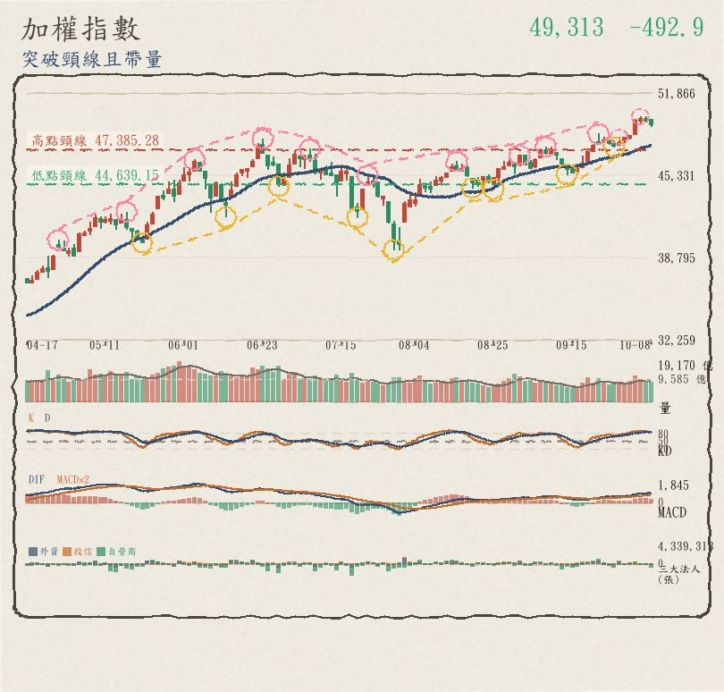
圖說：加權指數日 K（與個股圖相同標記）：黃圈＝轉折低點、粉圈＝轉折高點、虛線小圈＝還沒確認的轉折、藍線＝月線 MA20、水平虛線＝高點／低點頸線。最後一根是資料日當天。
本區塊為公開資料的技術面觀察，不構成投資建議，
不報牌、不預測、不下買賣決策。成交金額為集中市場總成交金額（含 ETF／權證），
與頁首摘要的「上市個股成交金額」口徑不同。標籤是統計，不是評分、也不是推薦。
上市 vs 上櫃（同期快篩）
加權 -0.99% vs 櫃買 -0.87%（同向） → 同向
（兩個市場分開寫，不合併成一個數字；櫃買為 TPEX 公開資料）
櫃買歷史：TPEX 逐日回補 130 根；來源：櫃買中心 www/zh-tw/indexInfo/sectinx（逐日，官方；OpenAPI tpex_index 只回當月）
（TPEX OpenAPI 只回當月，故逐日回補；歷史不足就不算該條均線並標「資料不足」，不用錯數字）
近 20 個交易日大盤狀態回溯（最新在上）（點開看逐日主狀態／量比／量價象限）
用同一支程式回算最近 20 個交易日（主狀態 S1~S8 與量比 20 皆為當日收盤當時的判定，
不是事後調整）；量比 20 未公布的日子寫「—」。
好條件最多的（前 10）
不好條件最多的（前 10）
好條件（8 項）：站上月線、月線向上、底底高、頭頭高、突破頸線、相對大盤強、外資買超、量價攻擊（收紅＋大量）。
不好條件（8 項）：跌破前低、今日下跌、相對大盤弱、在月線之下、量增下跌（出貨）、外資賣超、月線下彎、收盤跌破前一日低點。
兩邊都是同一組資料（日線結構＋當日收盤量價籌碼）算出來的「符合項目數」，只是方向相反；
條件數不是評分、也不是推薦，不構成投資建議。
上升趨勢：底底高 ＋ 頭頭高（16 上市 11／上櫃 5）
量價攻擊（收紅＋大量）（26 上市 19／上櫃 7）
逐檔分析（70 檔）
剛突破前高 成交金額 591.67 億・全榜第 1 名（上市第 1 名）
好條件 4/8：站上月線、月線向上、頭頭高、突破頸線
不好條件 5/8：今日下跌、相對大盤弱、量增下跌（出貨）、外資賣超、收盤跌破前一日低點
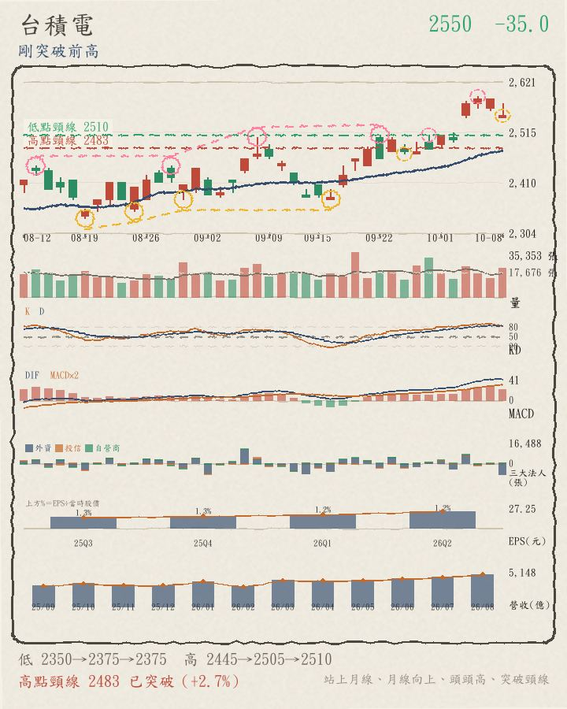
今天帶量收黑、站上月線 2476.5，已站上高點頸線 2483，高點還在墊高（但底部沒同步墊高）。
- 月線位置：收盤 2550 在月線 2476.5 之上；5 日線 2559 也在月線之上（短均在上）；月線向上、5 日線向上
- 量能：成交量是 20 日均量的 1.15 倍，比 20 日均量大不少；收黑卻量增，量價背離
- 關鍵價位：高點頸線 2483 已站上；最近轉折高點 2510（高於 1.6%）；最近轉折低點 2375（高於 7.4%）
- 轉折結構：高點 2445、2505、2510 墊高 3.2%（頭頭高），但低點 2350、2375、2375 沒有同步墊高；還沒確認的轉折低點 09-24 2470、10-08 2550；還沒確認的轉折高點 09-30 2510、10-06 2590（圖上虛線小圈）
底部墊高、未過前高 成交金額 421.26 億・全榜第 2 名（上市第 2 名）
好條件 2/8：月線向上、底底高
不好條件 7/8：跌破前低、今日下跌、相對大盤弱、在月線之下、量增下跌（出貨）、外資賣超、收盤跌破前一日低點
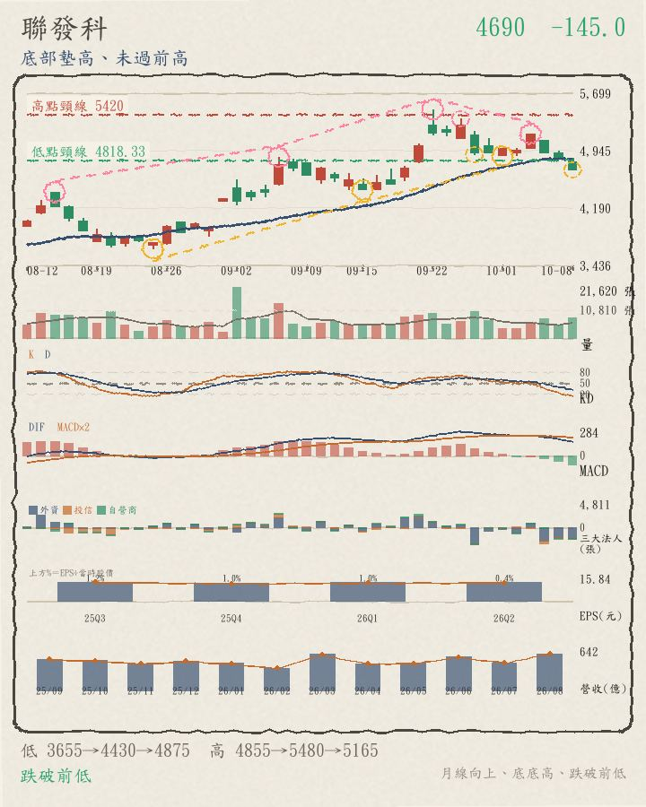
今天帶量收黑、跌破月線 4834.5，跌破前一個轉折低點（高點頸線 5420 還在收盤上方），底部還在墊高（但高點沒同步創高）。
- 月線位置：收盤 4690 在月線 4834.5 之下；5 日線 4912 也在月線之上（短均在上）；月線向上、5 日線走平或向下
- 量能：成交量是 20 日均量的 1.28 倍，比 20 日均量大不少；收黑卻量增，量價背離
- 關鍵價位：高點頸線 5420 還沒突破、還在收盤上方 13.5%；最近轉折高點 5165（低於 9.2%）；最近轉折低點 4875（低於 3.8%）
- 轉折結構：低點 3655、4430、4875 墊高 33.4%（底底高），但高點 4855、5480、5165 沒有同步創高；還沒確認的轉折低點 09-29 4890、10-08 4690；還沒確認的轉折高點 09-24 5360（圖上虛線小圈）
剛突破前高 成交金額 342.77 億・全榜第 3 名（上市第 3 名）
好條件 6/8：站上月線、月線向上、頭頭高、相對大盤強、外資買超、量價攻擊（收紅＋大量）
不好條件 0/8：無
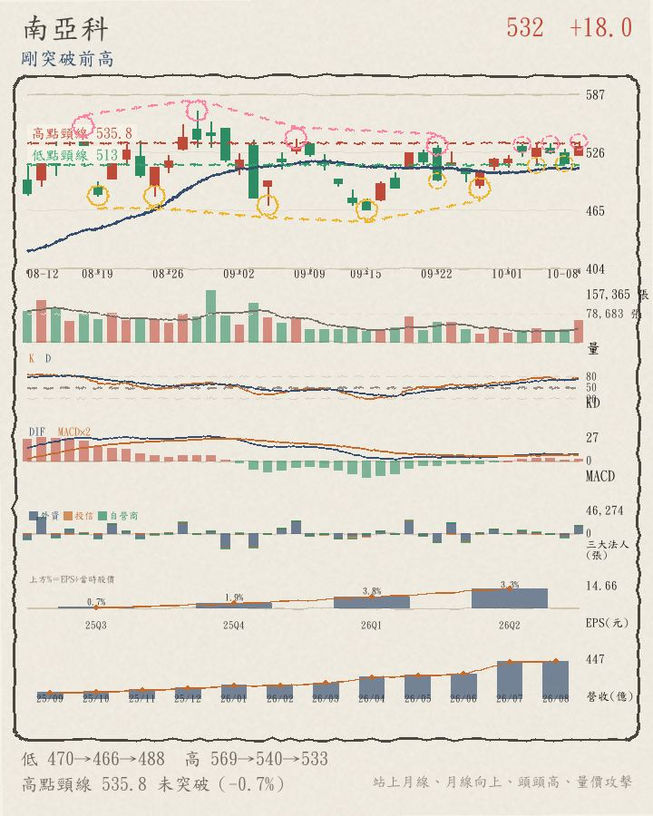
今天帶量收紅、站上月線 508.85，離高點頸線 535.8 還差 0.7%，高點還在墊高（但底部沒同步墊高）。
- 月線位置：收盤 532 在月線 508.85 之上；5 日線 525.4 也在月線之上（短均在上）；月線向上、5 日線向上
- 量能：成交量是 20 日均量的 1.53 倍，比 20 日均量大不少；收紅又量增，量價配合
- 關鍵價位：高點頸線 535.8 還沒突破，差 0.7%；最近轉折高點 533（低於 0.2%）；最近轉折低點 488（高於 9.0%）
- 轉折結構：高點 569、540、533 墊高 0.8%（頭頭高），但低點 470、465.5、488 沒有同步墊高；還沒確認的轉折低點 10-05 512、10-07 514；還沒確認的轉折高點 10-06 535、10-08 537（圖上虛線小圈）
剛突破前高 成交金額 299.62 億・全榜第 4 名（上市第 4 名）
好條件 3/8：站上月線、月線向上、頭頭高
不好條件 4/8：今日下跌、相對大盤弱、量增下跌（出貨）、外資賣超
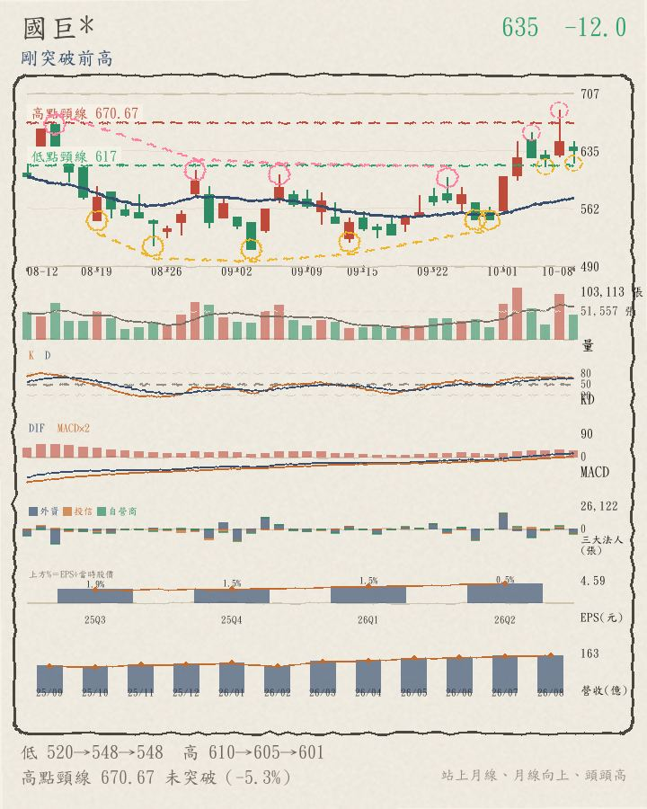
今天帶量收黑、站上月線 575.8，離高點頸線 670.67 還差 5.3%，高點還在墊高（但底部沒同步墊高）。
- 月線位置：收盤 635 在月線 575.8 之上；5 日線 631.8 也在月線之上（短均在上）；月線向上、5 日線向上
- 量能：成交量是 20 日均量的 1.17 倍，比 20 日均量大不少；收黑卻量增，量價背離
- 關鍵價位：高點頸線 670.67 還沒突破，差 5.3%；最近轉折高點 601（高於 5.7%）；最近轉折低點 548（高於 15.9%）
- 轉折結構：高點 610、605、601 墊高 14.1%（頭頭高），但低點 520、548、548 沒有同步墊高；還沒確認的轉折低點 10-06 615、10-08 619；還沒確認的轉折高點 10-05 658、10-07 686（圖上虛線小圈）
底部墊高、突破前高 成交金額 269.51 億・全榜第 5 名（上市第 5 名）
好條件 5/8：站上月線、月線向上、底底高、頭頭高、突破頸線
不好條件 4/8：今日下跌、相對大盤弱、量增下跌（出貨）、外資賣超
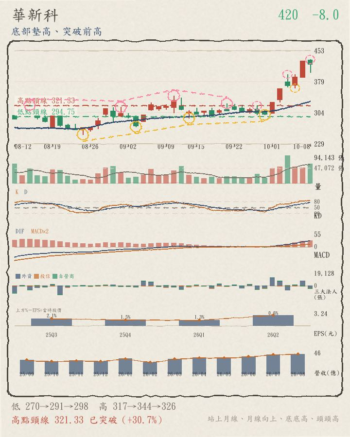
今天帶量收黑、站上月線 330.975，已站上高點頸線 321.33，轉折結構仍是底底高＋頭頭高。
- 月線位置：收盤 420 在月線 330.975 之上；5 日線 393.5 也在月線之上（短均在上）；月線向上、5 日線向上
- 量能：成交量是 20 日均量的 1.89 倍，比 20 日均量大不少；收黑卻量增，量價背離
- 關鍵價位：高點頸線 321.33 已站上；最近轉折高點 326（高於 28.8%）；最近轉折低點 298.5（高於 40.7%）
- 轉折結構：低點 270、291、298.5 一路墊高 10.6%、高點 317、344、326 也一路墊高 32.4%，是底底高＋頭頭高；還沒確認的轉折低點 10-06 362.5；還沒確認的轉折高點 10-05 396、10-08 431.5（圖上虛線小圈）
剛突破前高 成交金額 228.17 億・全榜第 6 名（上市第 6 名）
好條件 4/8：站上月線、月線向上、頭頭高、突破頸線
不好條件 4/8：今日下跌、相對大盤弱、量增下跌（出貨）、外資賣超
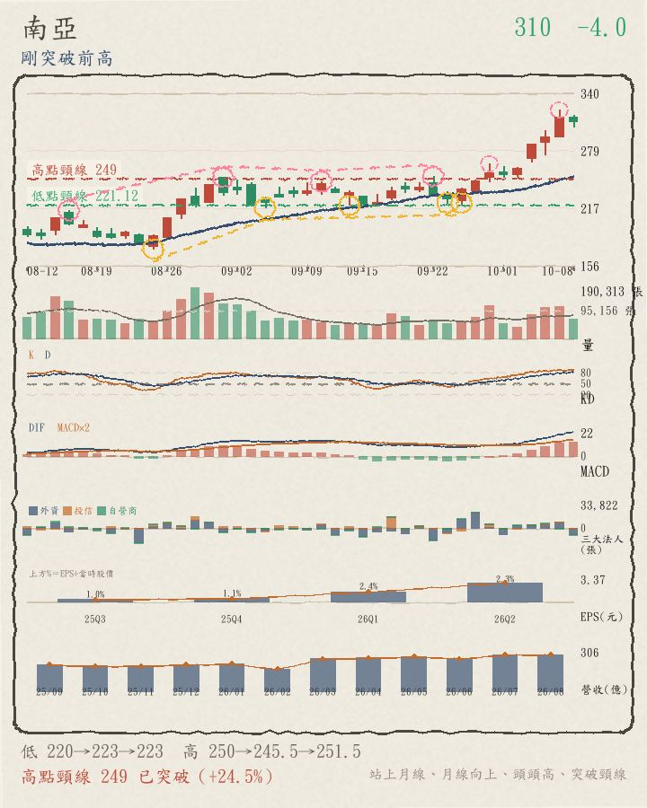
今天收黑、站上月線 251.225，已站上高點頸線 249，高點還在墊高（但底部沒同步墊高）。
- 月線位置：收盤 310 在月線 251.225 之上；5 日線 292.6 也在月線之上（短均在上）；月線向上、5 日線向上
- 量能：成交量是 20 日均量的 1.03 倍，跟 20 日均量差不多
- 關鍵價位：高點頸線 249 已站上；最近轉折高點 251.5（高於 23.3%）；最近轉折低點 223（高於 39.0%）
- 轉折結構：高點 250、245.5、251.5 墊高 28.0%（頭頭高），但低點 220.5、223、223 沒有同步墊高；還沒確認的轉折高點 09-30 265、10-07 322（圖上虛線小圈）
剛突破前高 成交金額 214.39 億・全榜第 8 名（上市第 7 名）
好條件 1/8：頭頭高
不好條件 8/8：跌破前低、今日下跌、相對大盤弱、在月線之下、量增下跌（出貨）、外資賣超、月線下彎、收盤跌破前一日低點
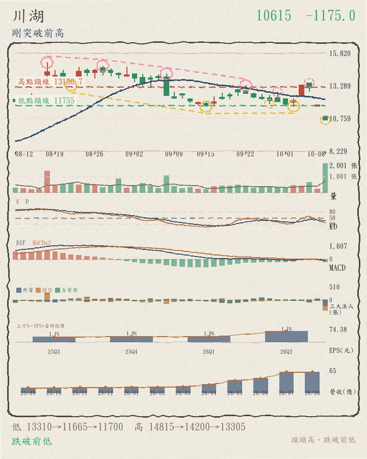
今天帶量收黑、跌破月線 12242，跌破前一個轉折低點（高點頸線 13196.7 還在收盤上方），高點還在墊高（但底部沒同步墊高）。
- 月線位置：收盤 10615 在月線 12242 之下；5 日線 12201 也在月線之下（短均在下）；月線走平或向下、5 日線向上
- 量能：成交量是 20 日均量的 4.80 倍，比 20 日均量大不少；收黑卻量增，量價背離
- 關鍵價位：高點頸線 13196.7 還沒突破、還在收盤上方 19.6%；最近轉折高點 13305（低於 20.2%）；最近轉折低點 11700（低於 9.3%）
- 轉折結構：高點 14815、14200、13305 墊高 1.5%（頭頭高），但低點 13310、11665、11700 沒有同步墊高；還沒確認的轉折低點 09-29 11900、10-08 10615；還沒確認的轉折高點 09-30 12785、10-06 13500（圖上虛線小圈）
世芯-KY 3661 上市
4345 +155.0
剛突破前高 成交金額 213.31 億・全榜第 9 名（上市第 8 名）
好條件 5/8：站上月線、頭頭高、相對大盤強、外資買超、量價攻擊（收紅＋大量）
不好條件 1/8：月線下彎
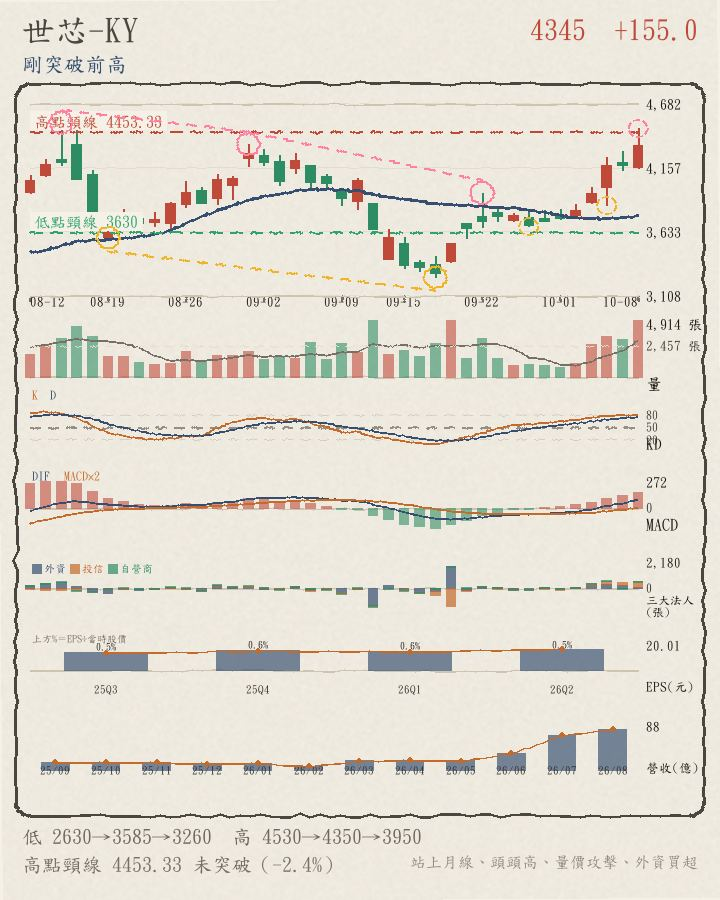
今天帶量收紅、站上月線 3765.5，離高點頸線 4453.33 還差 2.4%，高點還在墊高（但底部沒同步墊高）。
- 月線位置：收盤 4345 在月線 3765.5 之上；5 日線 4095 也在月線之上（短均在上）；月線走平或向下、5 日線向上
- 量能：成交量是 20 日均量的 2.12 倍，比 20 日均量大不少；收紅又量增，量價配合
- 關鍵價位：高點頸線 4453.33 還沒突破，差 2.4%；最近轉折高點 3950（高於 10.0%）；最近轉折低點 3260（高於 33.3%）
- 轉折結構：高點 4530、4350、3950 墊高 13.4%（頭頭高），但低點 2630、3585、3260 沒有同步墊高；還沒確認的轉折低點 09-29 3675、10-06 3850；還沒確認的轉折高點 10-08 4480（圖上虛線小圈）
底部墊高、突破前高 成交金額 201.82 億・全榜第 10 名（上市第 9 名）
好條件 6/8：站上月線、月線向上、底底高、頭頭高、相對大盤強、外資買超
不好條件 2/8：今日下跌、量增下跌（出貨）
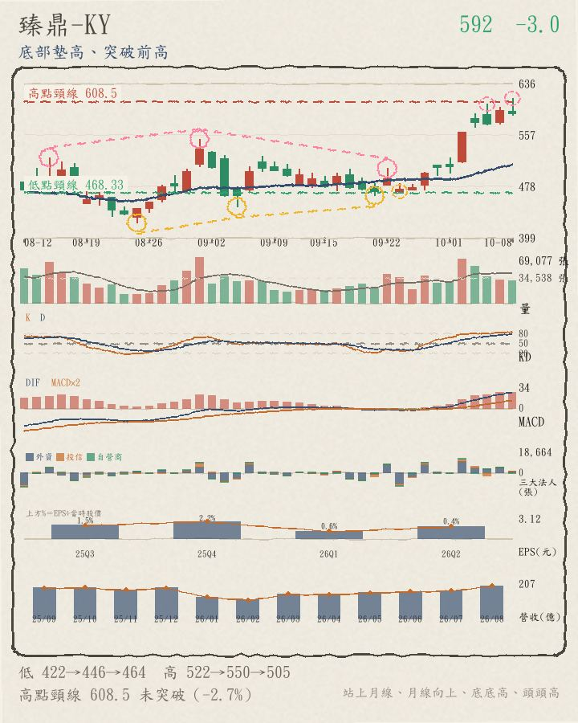
今天帶量收黑、站上月線 511.1，離高點頸線 608.5 還差 2.7%，轉折結構仍是底底高＋頭頭高。
- 月線位置：收盤 592 在月線 511.1 之上；5 日線 579.6 也在月線之上（短均在上）；月線向上、5 日線向上
- 量能：成交量是 20 日均量的 1.09 倍，比 20 日均量大一些；收黑卻量增，量價背離
- 關鍵價位：高點頸線 608.5 還沒突破，差 2.7%；最近轉折高點 505（高於 17.2%）；最近轉折低點 463.5（高於 27.7%）
- 轉折結構：低點 421.5、446.5、463.5 一路墊高 10.0%、高點 522、550、505 也一路墊高 21.4%，是底底高＋頭頭高；還沒確認的轉折低點 09-23 470；還沒確認的轉折高點 10-06 604、10-08 613（圖上虛線小圈）
高點墊高、底部不穩 成交金額 196.06 億・全榜第 11 名（上市第 10 名）
好條件 7/8：站上月線、月線向上、頭頭高、突破頸線、相對大盤強、外資買超、量價攻擊（收紅＋大量）
不好條件 0/8：無
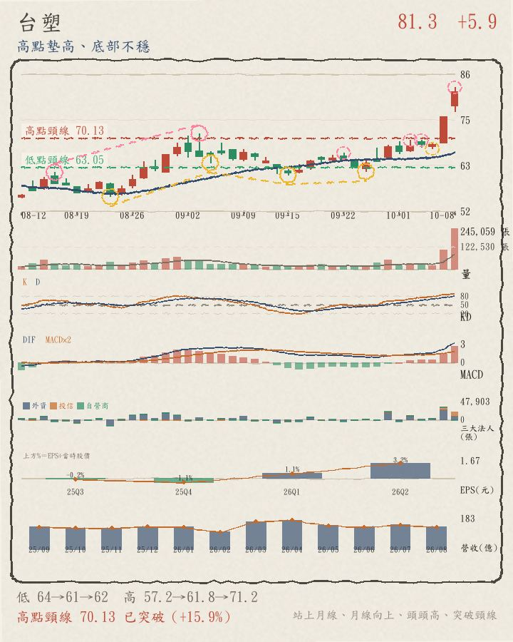
今天帶量收紅、站上月線 66.62，已站上高點頸線 70.13，高點還在墊高（但底部沒同步墊高）。
- 月線位置：收盤 81.3 在月線 66.62 之上；5 日線 72.42 也在月線之上（短均在上）；月線向上、5 日線向上
- 量能：成交量是 20 日均量的 8.61 倍，比 20 日均量大不少；收紅又量增，量價配合
- 關鍵價位：高點頸線 70.13 已站上；最近轉折高點 71.2（高於 14.2%）；最近轉折低點 62（高於 31.1%）
- 轉折結構：高點 57.2、61.8、71.2 墊高 24.5%（頭頭高），但低點 64.1、61.2、62 沒有同步墊高；還沒確認的轉折低點 10-06 67.5；還沒確認的轉折高點 10-05 69.6、10-08 82.4（圖上虛線小圈）
剛突破前高 成交金額 190.25 億・全榜第 12 名（上市第 11 名）
好條件 4/8：站上月線、頭頭高、相對大盤強、量價攻擊（收紅＋大量）
不好條件 2/8：外資賣超、月線下彎
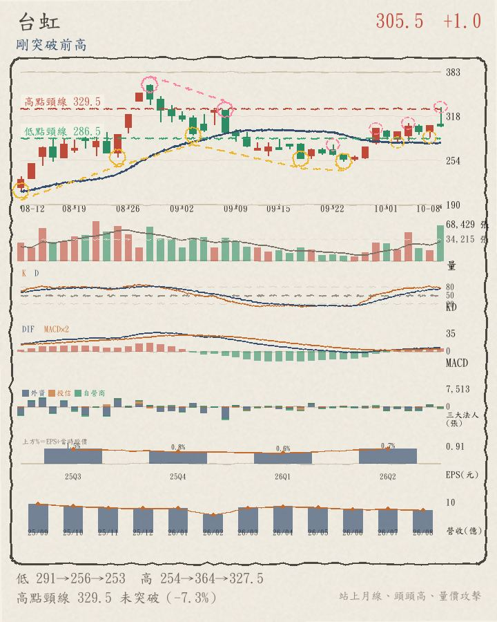
今天帶量收紅、站上月線 279.6，離高點頸線 329.5 還差 7.3%，高點還在墊高（但底部沒同步墊高）。
- 月線位置：收盤 305.5 在月線 279.6 之上；5 日線 301 也在月線之上（短均在上）；月線走平或向下、5 日線向上
- 量能：成交量是 20 日均量的 2.88 倍，比 20 日均量大不少；收紅又量增，量價配合
- 關鍵價位：高點頸線 329.5 還沒突破，差 7.3%；最近轉折高點 327.5（低於 6.7%）；最近轉折低點 253（高於 20.8%）
- 轉折結構：高點 254、364、327.5 墊高 1.2%（頭頭高），但低點 291、256.5、253 沒有同步墊高；還沒確認的轉折低點 10-02 280.5、10-07 288；還沒確認的轉折高點 10-05 308、10-08 331.5（圖上虛線小圈）
高點墊高、底部不穩 成交金額 154.26 億・全榜第 14 名（上市第 12 名）
好條件 5/8：站上月線、月線向上、頭頭高、相對大盤強、量價攻擊（收紅＋大量）
不好條件 1/8：外資賣超
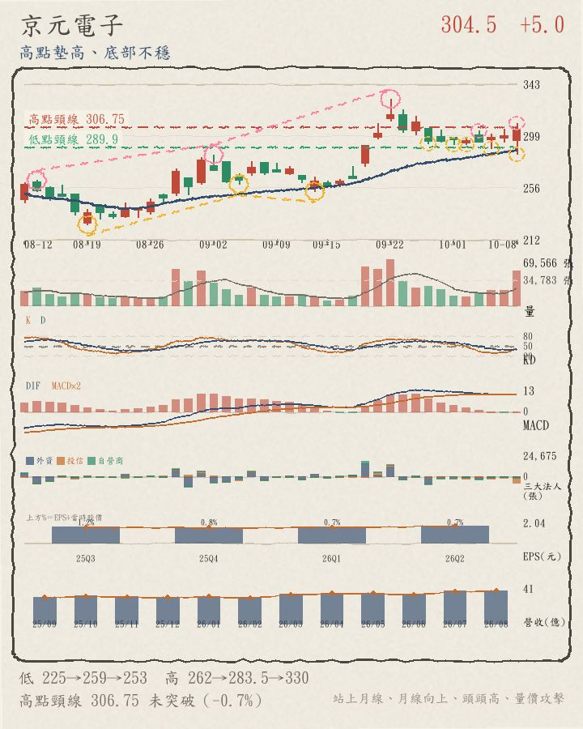
今天帶量收紅、站上月線 287.55，離高點頸線 306.75 還差 0.7%，高點還在墊高（但底部沒同步墊高）。
- 月線位置：收盤 304.5 在月線 287.55 之上；5 日線 298.3 也在月線之上（短均在上）；月線向上、5 日線走平或向下
- 量能：成交量是 20 日均量的 2.15 倍，比 20 日均量大不少；收紅又量增，量價配合
- 關鍵價位：高點頸線 306.75 還沒突破，差 0.7%；最近轉折高點 330（低於 7.7%）；最近轉折低點 253（高於 20.4%）
- 轉折結構：高點 262、283.5、330 墊高 26.0%（頭頭高），但低點 225、259、253 沒有同步墊高；還沒確認的轉折低點 10-06 288.5、10-08 284；還沒確認的轉折高點 10-05 303.5、10-08 310（圖上虛線小圈）
上升趨勢（底底高＋頭頭高） 成交金額 135.89 億・全榜第 15 名（上市第 13 名）
好條件 8/8：站上月線、月線向上、底底高、頭頭高、突破頸線、相對大盤強、外資買超、量價攻擊（收紅＋大量）
不好條件 0/8：無
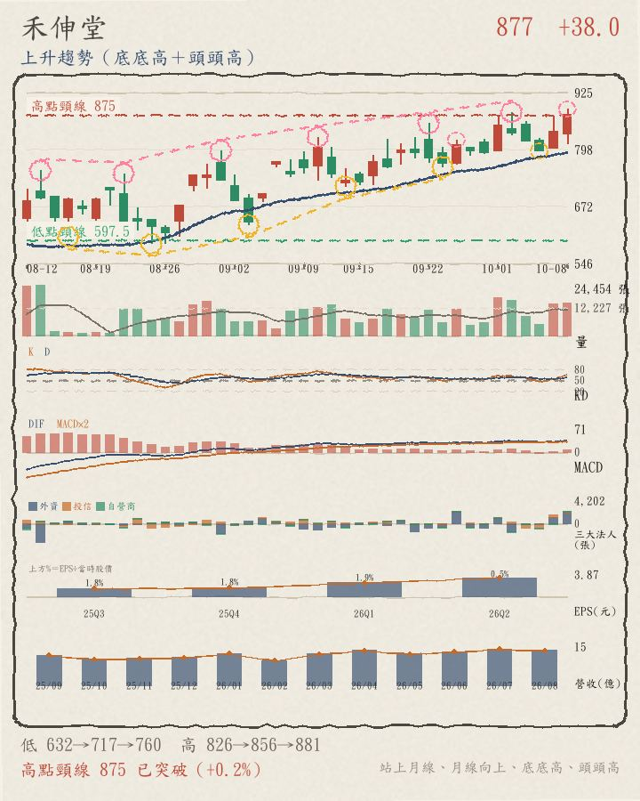
今天帶量收紅、站上月線 792.15，已站上高點頸線 875，轉折結構仍是底底高＋頭頭高。
- 月線位置：收盤 877 在月線 792.15 之上；5 日線 832.8 也在月線之上（短均在上）；月線向上、5 日線向上
- 量能：成交量是 20 日均量的 1.48 倍，比 20 日均量大不少；收紅又量增，量價配合
- 關鍵價位：高點頸線 875 已站上；最近轉折高點 881（低於 0.5%）；最近轉折低點 760（高於 15.4%）
- 轉折結構：低點 632、717、760 一路墊高 20.3%、高點 826、856、881 也一路墊高 6.7%，是底底高＋頭頭高；還沒確認的轉折低點 10-06 796；還沒確認的轉折高點 09-24 820、10-08 888（圖上虛線小圈）
剛突破前高 成交金額 129.65 億・全榜第 16 名（上市第 14 名）
好條件 2/8：站上月線、頭頭高
不好條件 5/8：今日下跌、相對大盤弱、外資賣超、月線下彎、收盤跌破前一日低點
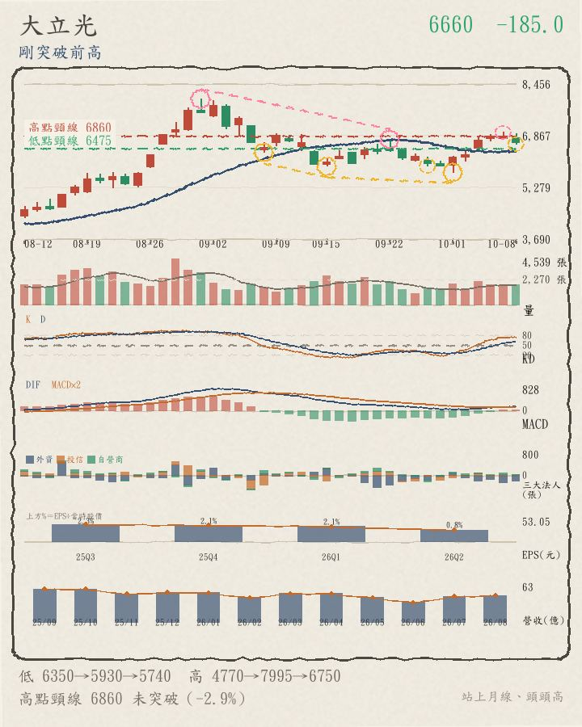
今天收黑、站上月線 6388.25，離高點頸線 6860 還差 2.9%，高點還在墊高（但底部沒同步墊高）。
- 月線位置：收盤 6660 在月線 6388.25 之上；5 日線 6676 也在月線之上（短均在上）；月線走平或向下、5 日線向上
- 量能：成交量是 20 日均量的 1.00 倍，跟 20 日均量差不多
- 關鍵價位：高點頸線 6860 還沒突破，差 2.9%；最近轉折高點 6750（低於 1.3%）；最近轉折低點 5740（高於 16.0%）
- 轉折結構：高點 4770、7995、6750 墊高 3.3%（頭頭高），但低點 6350、5930、5740 沒有同步墊高；還沒確認的轉折低點 09-29 5940、10-08 6600；還沒確認的轉折高點 10-07 6970（圖上虛線小圈）
底部墊高、未過前高 成交金額 125.83 億・全榜第 19 名（上市第 15 名）
好條件 3/8：站上月線、月線向上、底底高
不好條件 3/8：今日下跌、相對大盤弱、外資賣超
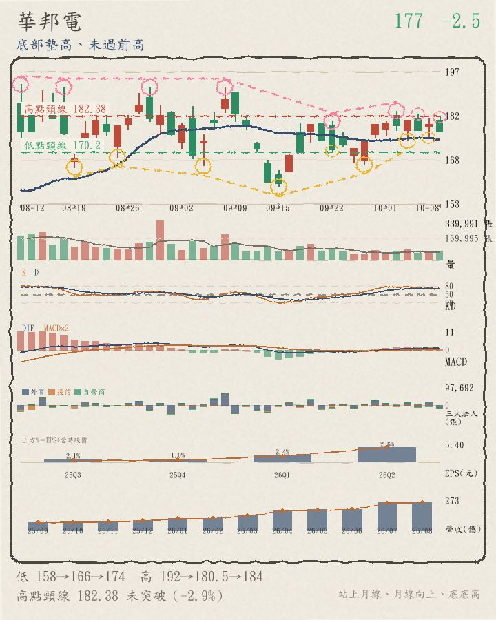
今天收黑、成交量也比平均少、站上月線 174.425，離高點頸線 182.38 還差 2.9%，底部還在墊高（但高點沒同步創高）。
- 月線位置：收盤 177 在月線 174.425 之上；5 日線 178.8 也在月線之上（短均在上）；月線向上、5 日線向上
- 量能：成交量是 20 日均量的 0.79 倍，比 20 日均量少很多
- 關鍵價位：高點頸線 182.38 還沒突破，差 2.9%；最近轉折高點 184（低於 3.8%）；最近轉折低點 174（高於 1.7%）
- 轉折結構：低點 158.5、166、174 墊高 9.8%（底底高），但高點 192、180.5、184 沒有同步創高；還沒確認的轉折低點 09-22 170.5、10-07 175；還沒確認的轉折高點 10-06 183、10-08 182（圖上虛線小圈）
底部墊高、未過前高 成交金額 123.03 億・全榜第 20 名（上市第 16 名）
好條件 3/8：月線向上、底底高、相對大盤強
不好條件 4/8：跌破前低、今日下跌、在月線之下、外資賣超
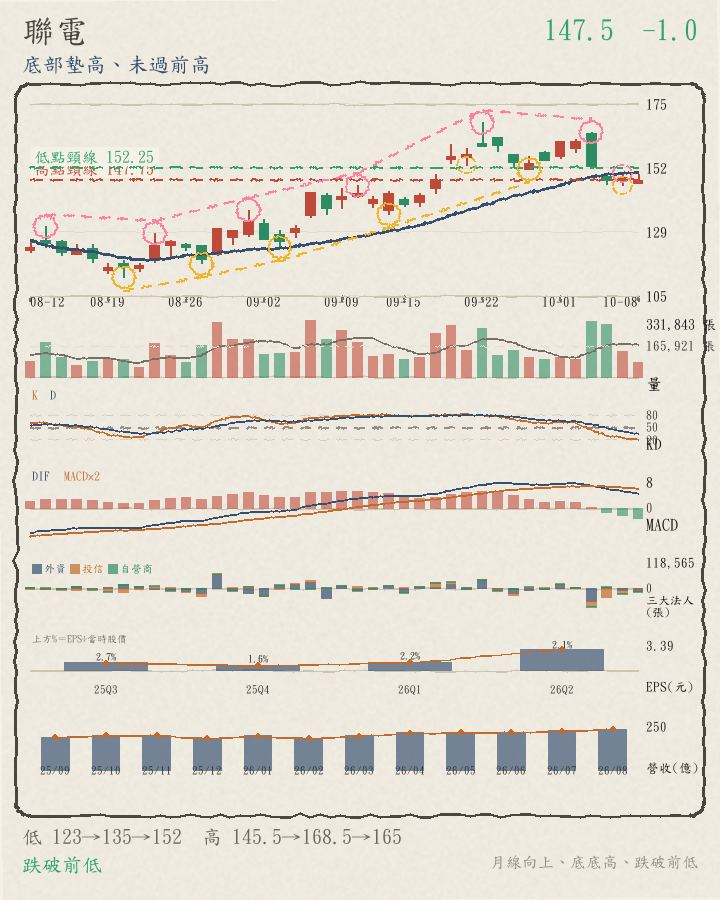
今天收黑、成交量也比平均少、跌破月線 150.45，跌破前一個轉折低點（高點頸線 147.75 還在收盤上方），底部還在墊高（但高點沒同步創高）。
- 月線位置：收盤 147.5 在月線 150.45 之下；5 日線 151.5 也在月線之上（短均在上）；月線向上、5 日線走平或向下
- 量能：成交量是 20 日均量的 0.46 倍，比 20 日均量少很多
- 關鍵價位：高點頸線 147.75 還沒突破、還在收盤上方 0.2%；最近轉折高點 165（低於 10.6%）；最近轉折低點 151.5（低於 2.6%）
- 轉折結構：低點 123、135、151.5 墊高 23.2%（底底高），但高點 145.5、168.5、165 沒有同步創高；還沒確認的轉折低點 09-21 153、10-07 145.5；還沒確認的轉折高點 10-07 150（圖上虛線小圈）
剛突破前高 成交金額 122.85 億・全榜第 21 名（上市第 17 名）
好條件 6/8：站上月線、月線向上、頭頭高、突破頸線、相對大盤強、量價攻擊（收紅＋大量）
不好條件 1/8：外資賣超
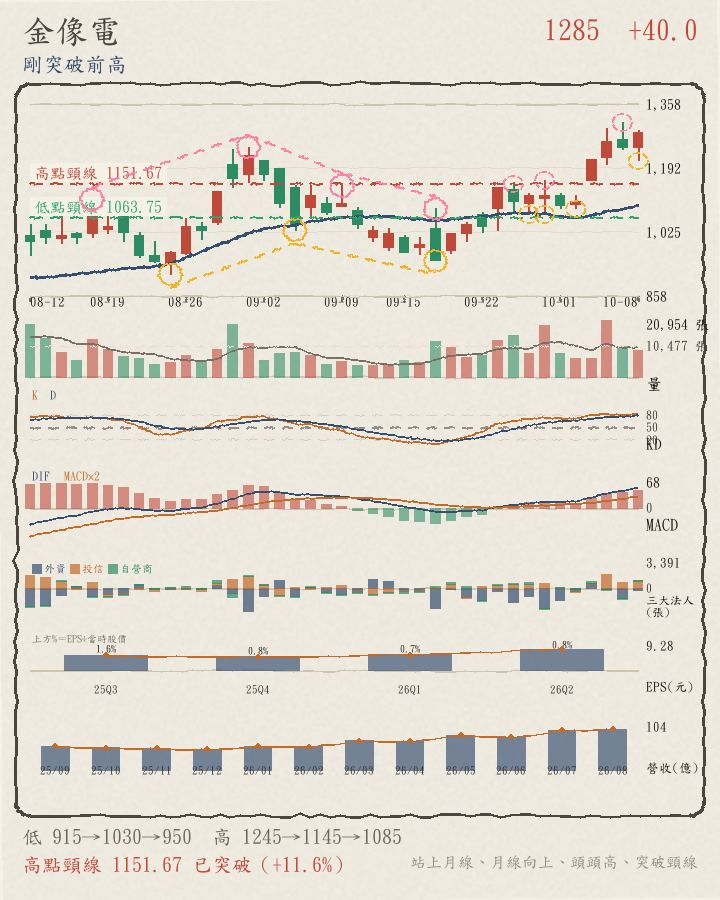
今天帶量收紅、站上月線 1095.2，已站上高點頸線 1151.67，高點還在墊高（但底部沒同步墊高）。
- 月線位置：收盤 1285 在月線 1095.2 之上；5 日線 1222 也在月線之上（短均在上）；月線向上、5 日線向上
- 量能：成交量是 20 日均量的 1.05 倍，比 20 日均量大一些；收紅又量增，量價配合
- 關鍵價位：高點頸線 1151.67 已站上；最近轉折高點 1085（高於 18.4%）；最近轉折低點 950（高於 35.3%）
- 轉折結構：高點 1245、1145、1085 墊高 20.7%（頭頭高），但低點 915、1030、950 沒有同步墊高；還沒確認的轉折低點 10-02 1085、10-08 1210；還沒確認的轉折高點 09-30 1160、10-07 1310（圖上虛線小圈）
上升趨勢（底底高＋頭頭高） 成交金額 117.17 億・全榜第 22 名（上市第 18 名）
好條件 7/8：站上月線、月線向上、底底高、頭頭高、相對大盤強、外資買超、量價攻擊（收紅＋大量）
不好條件 0/8：無
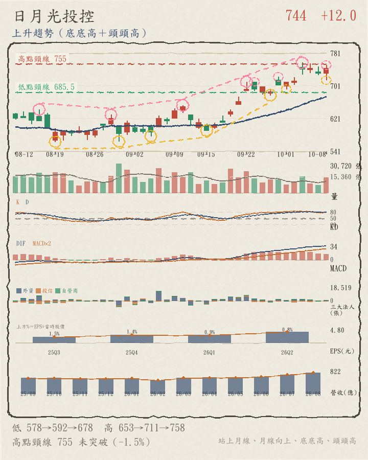
今天帶量收紅、站上月線 674.6，離高點頸線 755 還差 1.5%，轉折結構仍是底底高＋頭頭高。
- 月線位置：收盤 744 在月線 674.6 之上；5 日線 735 也在月線之上（短均在上）；月線向上、5 日線向上
- 量能：成交量是 20 日均量的 1.11 倍，比 20 日均量大一些；收紅又量增，量價配合
- 關鍵價位：高點頸線 755 還沒突破，差 1.5%；最近轉折高點 758（低於 1.8%）；最近轉折低點 678（高於 9.7%）
- 轉折結構：低點 578、592、678 一路墊高 17.3%、高點 653、711、758 也一路墊高 16.1%，是底底高＋頭頭高；還沒確認的轉折低點 10-01 693、10-08 715；還沒確認的轉折高點 09-30 723、10-08 752（圖上虛線小圈）
高點墊高、底部不穩 成交金額 115.29 億・全榜第 23 名（上市第 19 名）
好條件 6/8：站上月線、月線向上、頭頭高、相對大盤強、外資買超、量價攻擊（收紅＋大量）
不好條件 0/8：無
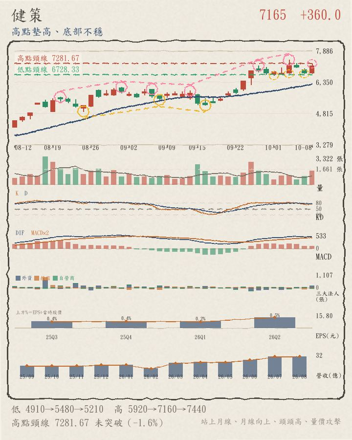
今天帶量收紅、站上月線 6257，離高點頸線 7281.67 還差 1.6%，高點還在墊高（但底部沒同步墊高）。
- 月線位置：收盤 7165 在月線 6257 之上；5 日線 7011 也在月線之上（短均在上）；月線向上、5 日線向上
- 量能：成交量是 20 日均量的 1.42 倍，比 20 日均量大不少；收紅又量增，量價配合
- 關鍵價位：高點頸線 7281.67 還沒突破，差 1.6%；最近轉折高點 7440（低於 3.7%）；最近轉折低點 5210（高於 37.5%）
- 轉折結構：高點 5920、7160、7440 墊高 25.7%（頭頭高），但低點 4910、5480、5210 沒有同步墊高；還沒確認的轉折低點 10-05 6760、10-07 6760；還沒確認的轉折高點 10-08 7245（圖上虛線小圈）
高點墊高、底部不穩 成交金額 111.41 億・全榜第 24 名（上市第 20 名）
好條件 5/8：站上月線、月線向上、頭頭高、突破頸線、外資買超
不好條件 3/8：今日下跌、相對大盤弱、收盤跌破前一日低點
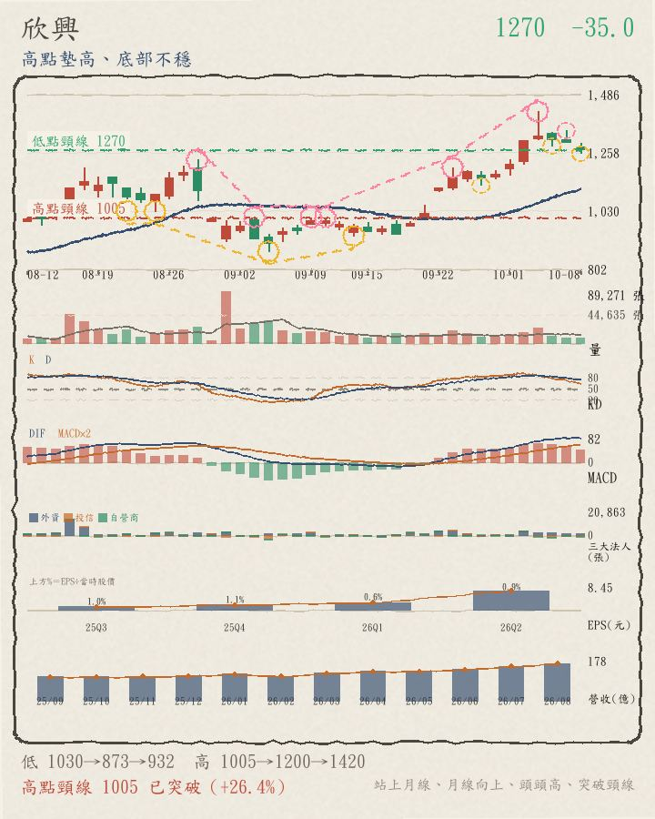
今天收黑、成交量也比平均少、站上月線 1116.1，已站上高點頸線 1005，高點還在墊高（但底部沒同步墊高）。
- 月線位置：收盤 1270 在月線 1116.1 之上；5 日線 1303 也在月線之上（短均在上）；月線向上、5 日線向上
- 量能：成交量是 20 日均量的 0.59 倍，比 20 日均量少很多
- 關鍵價位：高點頸線 1005 已站上；最近轉折高點 1420（低於 10.6%）；最近轉折低點 932（高於 36.3%）
- 轉折結構：高點 1005、1200、1420 墊高 41.3%（頭頭高），但低點 1030、873、932 沒有同步墊高；還沒確認的轉折低點 10-06 1285、10-08 1255；還沒確認的轉折高點 10-07 1345（圖上虛線小圈）
剛突破前高 成交金額 110.28 億・全榜第 25 名（上市第 21 名）
好條件 4/8：站上月線、月線向上、頭頭高、相對大盤強
不好條件 1/8：外資賣超
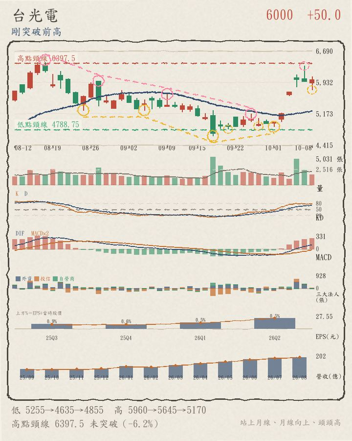
今天收紅、但成交量比平均少、站上月線 5236.5，離高點頸線 6397.5 還差 6.2%，高點還在墊高（但底部沒同步墊高）。
- 月線位置：收盤 6000 在月線 5236.5 之上；5 日線 5766 也在月線之上（短均在上）；月線向上、5 日線向上
- 量能：成交量是 20 日均量的 0.91 倍，比 20 日均量少一些；收紅但量縮，量價背離
- 關鍵價位：高點頸線 6397.5 還沒突破，差 6.2%；最近轉折高點 5170（高於 16.1%）；最近轉折低點 4855（高於 23.6%）
- 轉折結構：高點 5960、5645、5170 墊高 22.3%（頭頭高），但低點 5255、4635、4855 沒有同步墊高；還沒確認的轉折低點 09-29 4870、10-08 5745；還沒確認的轉折高點 10-07 6325（圖上虛線小圈）
剛突破前高 成交金額 109.27 億・全榜第 27 名（上市第 22 名）
好條件 3/8：站上月線、月線向上、頭頭高
不好條件 5/8：今日下跌、相對大盤弱、量增下跌（出貨）、外資賣超、收盤跌破前一日低點
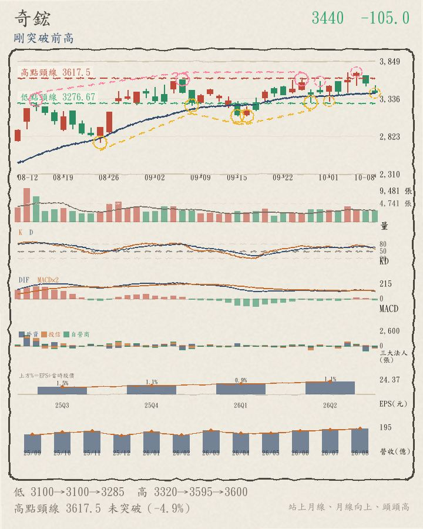
今天帶量收黑、站上月線 3414.75，離高點頸線 3617.5 還差 4.9%，高點還在墊高（但底部沒同步墊高）。
- 月線位置：收盤 3440 在月線 3414.75 之上；5 日線 3539 也在月線之上（短均在上）；月線向上、5 日線向上
- 量能：成交量是 20 日均量的 1.13 倍，比 20 日均量大一些；收黑卻量增，量價背離
- 關鍵價位：高點頸線 3617.5 還沒突破，差 4.9%；最近轉折高點 3600（低於 4.4%）；最近轉折低點 3285（高於 4.7%）
- 轉折結構：高點 3320、3595、3600 墊高 2.8%（頭頭高），但低點 3100、3100、3285 沒有同步墊高；還沒確認的轉折低點 10-01 3300、10-08 3410；還沒確認的轉折高點 09-30 3575、10-06 3700（圖上虛線小圈）
高點墊高、底部不穩 成交金額 108.81 億・全榜第 28 名（上市第 23 名）
好條件 4/8：站上月線、月線向上、頭頭高、突破頸線
不好條件 4/8：今日下跌、相對大盤弱、外資賣超、收盤跌破前一日低點
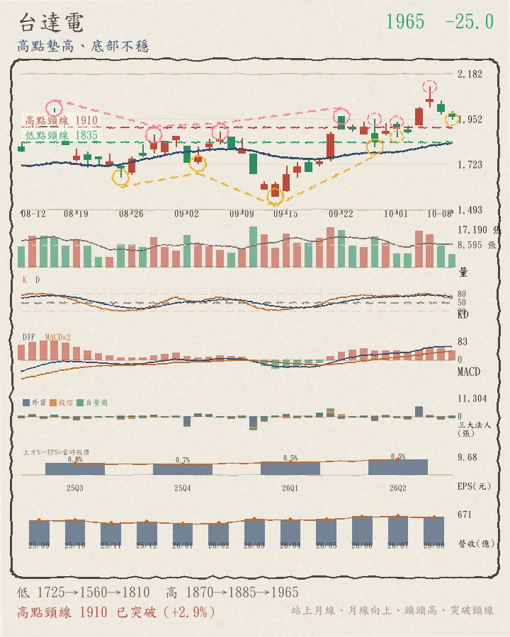
今天收黑、成交量也比平均少、站上月線 1831，已站上高點頸線 1910，高點還在墊高（但底部沒同步墊高）。
- 月線位置：收盤 1965 在月線 1831 之上；5 日線 1979 也在月線之上（短均在上）；月線向上、5 日線向上
- 量能：成交量是 20 日均量的 0.48 倍，比 20 日均量少很多
- 關鍵價位：高點頸線 1910 已站上；最近轉折高點 1965（高於 0.0%）；最近轉折低點 1810（高於 8.6%）
- 轉折結構：高點 1870、1885、1965 墊高 5.1%（頭頭高），但低點 1725、1560、1810 沒有同步墊高；還沒確認的轉折低點 10-01 1860、10-08 1950；還沒確認的轉折高點 10-01 1935、10-06 2115（圖上虛線小圈）
剛突破前高 成交金額 103.14 億・全榜第 29 名（上市第 24 名）
好條件 4/8：站上月線、月線向上、頭頭高、突破頸線
不好條件 4/8：今日下跌、相對大盤弱、量增下跌（出貨）、外資賣超
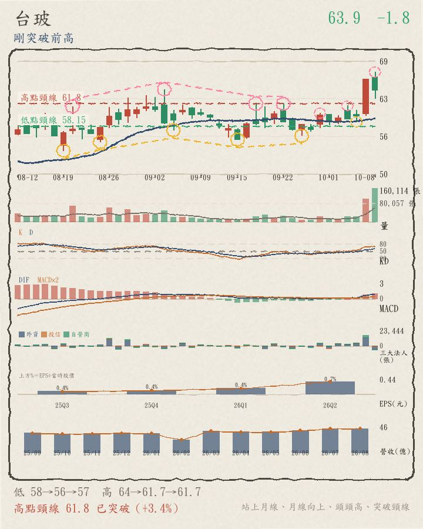
今天帶量收黑、站上月線 59.35，已站上高點頸線 61.8，高點還在墊高（但底部沒同步墊高）。
- 月線位置：收盤 63.9 在月線 59.35 之上；5 日線 61.64 也在月線之上（短均在上）；月線向上、5 日線向上
- 量能：成交量是 20 日均量的 7.59 倍，比 20 日均量大不少；收黑卻量增，量價背離
- 關鍵價位：高點頸線 61.8 已站上；最近轉折高點 61.7（高於 3.6%）；最近轉折低點 56.6（高於 12.9%）
- 轉折結構：高點 64、61.7、61.7 墊高 8.3%（頭頭高），但低點 57.5、56、56.6 沒有同步墊高；還沒確認的轉折低點 10-06 58.8；還沒確認的轉折高點 10-05 61.4、10-08 66.8（圖上虛線小圈）
上升趨勢（底底高＋頭頭高） 成交金額 103.13 億・全榜第 30 名（上市第 25 名）
好條件 4/8：站上月線、月線向上、底底高、頭頭高
不好條件 3/8：今日下跌、相對大盤弱、外資賣超
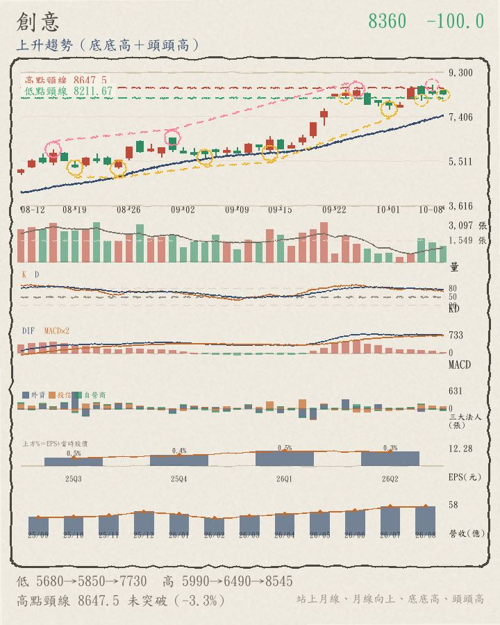
今天收黑、成交量也比平均少、站上月線 7449.25，離高點頸線 8647.5 還差 3.3%，轉折結構仍是底底高＋頭頭高。
- 月線位置：收盤 8360 在月線 7449.25 之上；5 日線 8339 也在月線之上（短均在上）；月線向上、5 日線向上
- 量能：成交量是 20 日均量的 0.81 倍，比 20 日均量少很多
- 關鍵價位：高點頸線 8647.5 還沒突破，差 3.3%；最近轉折高點 8545（低於 2.2%）；最近轉折低點 7730（高於 8.2%）
- 轉折結構：低點 5680、5850、7730 一路墊高 36.1%、高點 5990、6490、8545 也一路墊高 42.7%，是底底高＋頭頭高；還沒確認的轉折低點 10-06 8110、10-08 8325；還沒確認的轉折高點 10-07 8750（圖上虛線小圈）
高點墊高、底部不穩 成交金額 101.76 億・全榜第 31 名（上市第 26 名）
好條件 3/8：站上月線、月線向上、頭頭高
不好條件 4/8：今日下跌、相對大盤弱、外資賣超、收盤跌破前一日低點
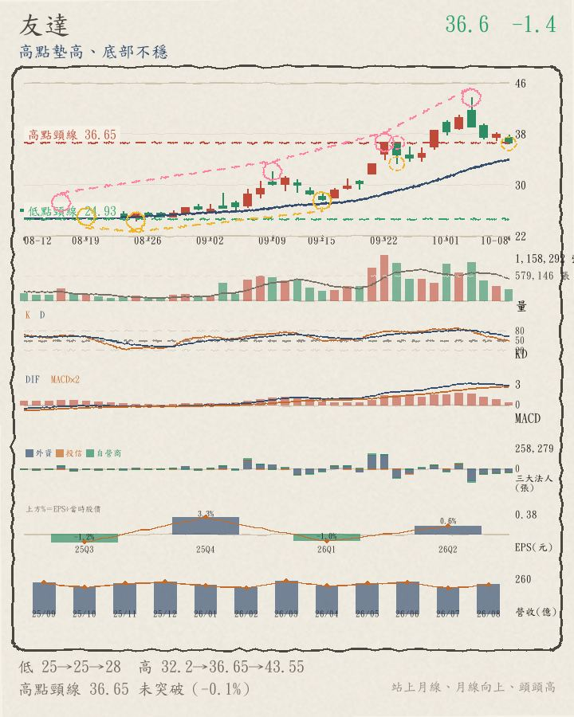
今天收黑、成交量也比平均少、站上月線 34.028，離高點頸線 36.65 還差 0.1%，高點還在墊高（但底部沒同步墊高）。
- 月線位置：收盤 36.6 在月線 34.028 之上；5 日線 38.3 也在月線之上（短均在上）；月線向上、5 日線向上
- 量能：成交量是 20 日均量的 0.47 倍，比 20 日均量少很多
- 關鍵價位：高點頸線 36.65 還沒突破，差 0.1%；最近轉折高點 43.55（低於 16.0%）；最近轉折低點 27.75（高於 31.9%）
- 轉折結構：高點 32.2、36.65、43.55 墊高 35.2%（頭頭高），但低點 25.25、24.6、27.75 沒有同步墊高；還沒確認的轉折低點 09-23 33.4、10-08 36.5；還沒確認的轉折高點 09-23 36.65（圖上虛線小圈）
底部墊高、突破前高 成交金額 100.59 億・全榜第 32 名（上市第 27 名）
好條件 2/8：底底高、頭頭高
不好條件 6/8：今日下跌、相對大盤弱、在月線之下、量增下跌（出貨）、外資賣超、收盤跌破前一日低點
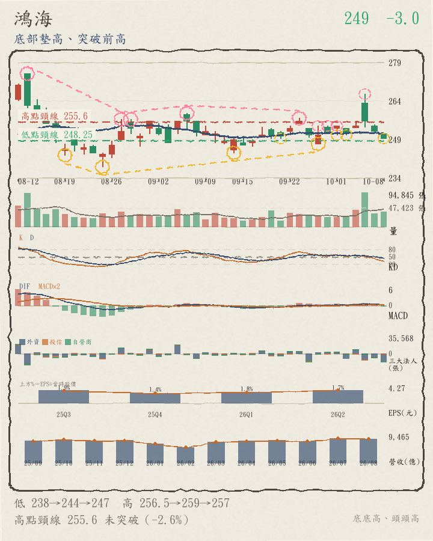
今天帶量收黑、跌破月線 251.125，離高點頸線 255.6 還差 2.6%，轉折結構仍是底底高＋頭頭高。
- 月線位置：收盤 249 在月線 251.125 之下；5 日線 252.4 也在月線之上（短均在上）；月線走平或向下、5 日線走平或向下
- 量能：成交量是 20 日均量的 1.22 倍，比 20 日均量大不少；收黑卻量增，量價背離
- 關鍵價位：高點頸線 255.6 還沒突破，差 2.6%；最近轉折高點 257（低於 3.1%）；最近轉折低點 247（高於 0.8%）
- 轉折結構：低點 238、243.5、247 一路墊高 3.8%、高點 256.5、259、257 也一路墊高 3.7%，是底底高＋頭頭高；還沒確認的轉折低點 10-02 250.5、10-08 249；還沒確認的轉折高點 10-01 254、10-06 266.5（圖上虛線小圈）
剛突破前高 成交金額 91.91 億・全榜第 34 名（上市第 28 名）
好條件 5/8：站上月線、頭頭高、相對大盤強、外資買超、量價攻擊（收紅＋大量）
不好條件 1/8：月線下彎
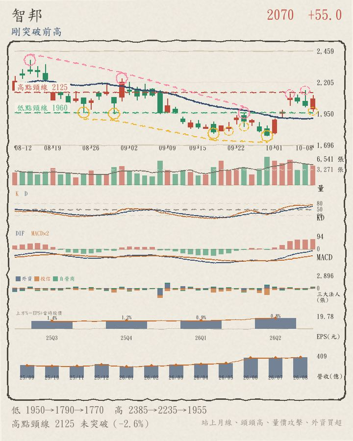
今天帶量收紅、站上月線 1913.75，離高點頸線 2125 還差 2.6%，高點還在墊高（但底部沒同步墊高）。
- 月線位置：收盤 2070 在月線 1913.75 之上；5 日線 2035 也在月線之上（短均在上）；月線走平或向下、5 日線向上
- 量能：成交量是 20 日均量的 1.12 倍，比 20 日均量大一些；收紅又量增，量價配合
- 關鍵價位：高點頸線 2125 還沒突破，差 2.6%；最近轉折高點 1955（高於 5.9%）；最近轉折低點 1770（高於 16.9%）
- 轉折結構：高點 2385、2235、1955 墊高 9.5%（頭頭高），但低點 1950、1790、1770 沒有同步墊高；還沒確認的轉折低點 09-23 1845、10-08 1970；還沒確認的轉折高點 10-05 2110、10-07 2140（圖上虛線小圈）
高點墊高、底部不穩 成交金額 86.81 億・全榜第 36 名（上市第 29 名）
好條件 6/8：站上月線、月線向上、頭頭高、相對大盤強、外資買超、量價攻擊（收紅＋大量）
不好條件 0/8：無
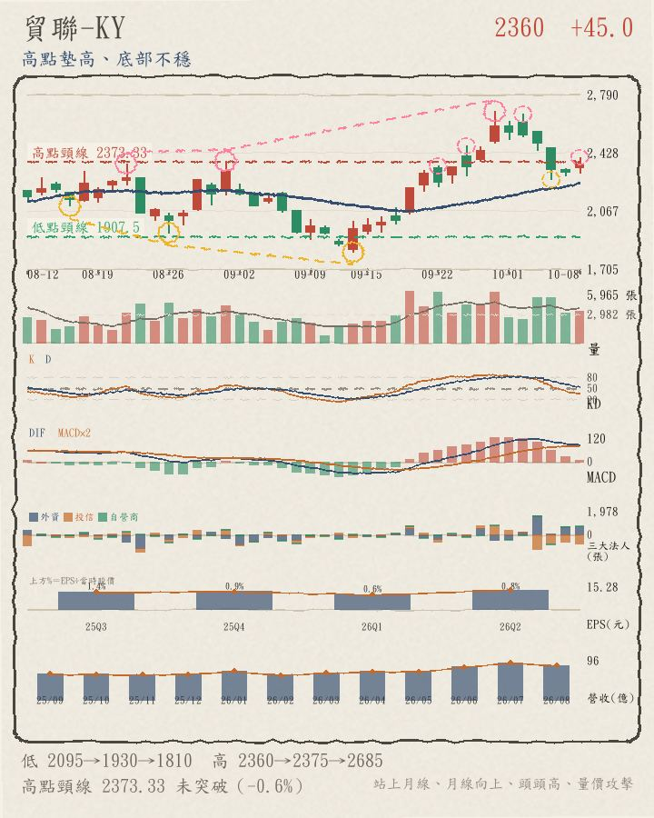
今天收紅、站上月線 2238.75，離高點頸線 2373.33 還差 0.6%，高點還在墊高（但底部沒同步墊高）。
- 月線位置：收盤 2360 在月線 2238.75 之上；5 日線 2405 也在月線之上（短均在上）；月線向上、5 日線走平或向下
- 量能：成交量是 20 日均量的 1.03 倍，跟 20 日均量差不多
- 關鍵價位：高點頸線 2373.33 還沒突破，差 0.6%；最近轉折高點 2685（低於 12.1%）；最近轉折低點 1810（高於 30.4%）
- 轉折結構：高點 2360、2375、2685 墊高 13.8%（頭頭高），但低點 2095、1930、1810 沒有同步墊高；還沒確認的轉折低點 10-06 2260；還沒確認的轉折高點 10-02 2670、10-08 2400（圖上虛線小圈）
剛突破前高 成交金額 85.39 億・全榜第 37 名（上市第 30 名）
好條件 5/8：站上月線、頭頭高、相對大盤強、外資買超、量價攻擊（收紅＋大量）
不好條件 1/8：月線下彎
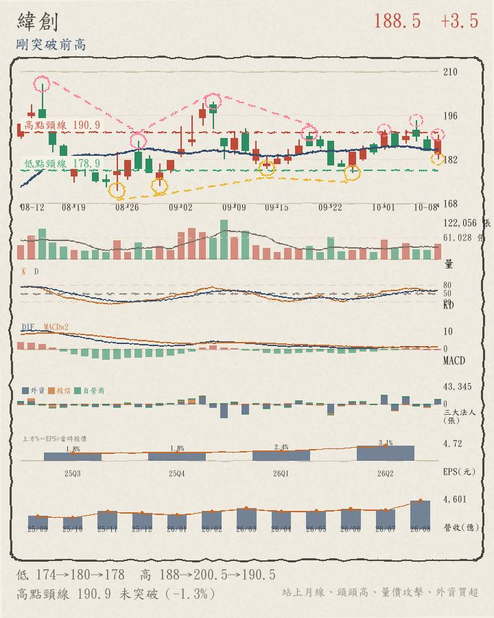
今天帶量收紅、站上月線 185.5，離高點頸線 190.9 還差 1.3%，高點還在墊高（但底部沒同步墊高）。
- 月線位置：收盤 188.5 在月線 185.5 之上；5 日線 187.8 也在月線之上（短均在上）；月線走平或向下、5 日線向上
- 量能：成交量是 20 日均量的 1.05 倍，比 20 日均量大一些；收紅又量增，量價配合
- 關鍵價位：高點頸線 190.9 還沒突破，差 1.3%；最近轉折高點 190.5（低於 1.0%）；最近轉折低點 178（高於 5.9%）
- 轉折結構：高點 188、200.5、190.5 墊高 2.1%（頭頭高），但低點 174、179.5、178 沒有同步墊高；還沒確認的轉折低點 10-08 182.5；還沒確認的轉折高點 10-06 194.5、10-08 190（圖上虛線小圈）
區間或轉弱 成交金額 83.81 億・全榜第 38 名（上市第 31 名）
好條件 2/8：月線向上、相對大盤強
不好條件 4/8：今日下跌、在月線之下、外資賣超、收盤跌破前一日低點
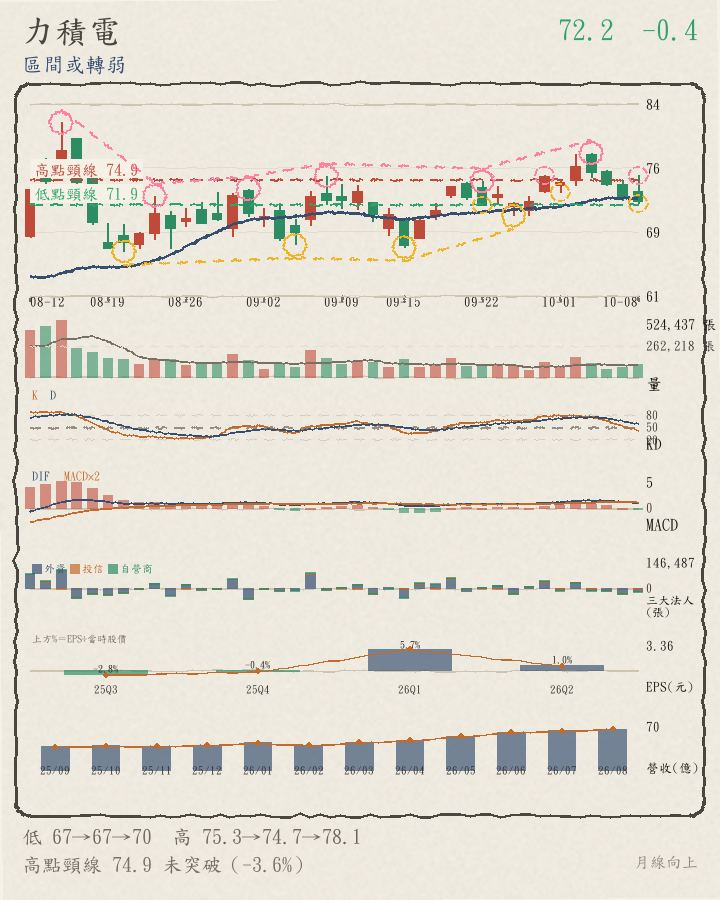
今天收黑、跌破月線 72.62，離高點頸線 74.9 還差 3.6%，轉折還沒走出明顯方向。
- 月線位置：收盤 72.2 在月線 72.62 之下；5 日線 74.28 也在月線之上（短均在上）；月線向上、5 日線向上
- 量能：成交量是 20 日均量的 0.97 倍，跟 20 日均量差不多
- 關鍵價位：高點頸線 74.9 還沒突破，差 3.6%；最近轉折高點 78.1（低於 7.6%）；最近轉折低點 70.5（高於 2.4%）
- 轉折結構：低點 67、66.7、70.5 與高點 75.3、74.7、78.1 都沒有明顯遞增，屬於區間震盪或轉弱；還沒確認的轉折低點 10-01 73.3、10-08 72；還沒確認的轉折高點 09-30 75.4、10-08 75.4（圖上虛線小圈）
底部墊高、突破前高 成交金額 78.57 億・全榜第 41 名（上市第 32 名）
好條件 6/8：站上月線、月線向上、底底高、頭頭高、相對大盤強、外資買超
不好條件 1/8：今日下跌
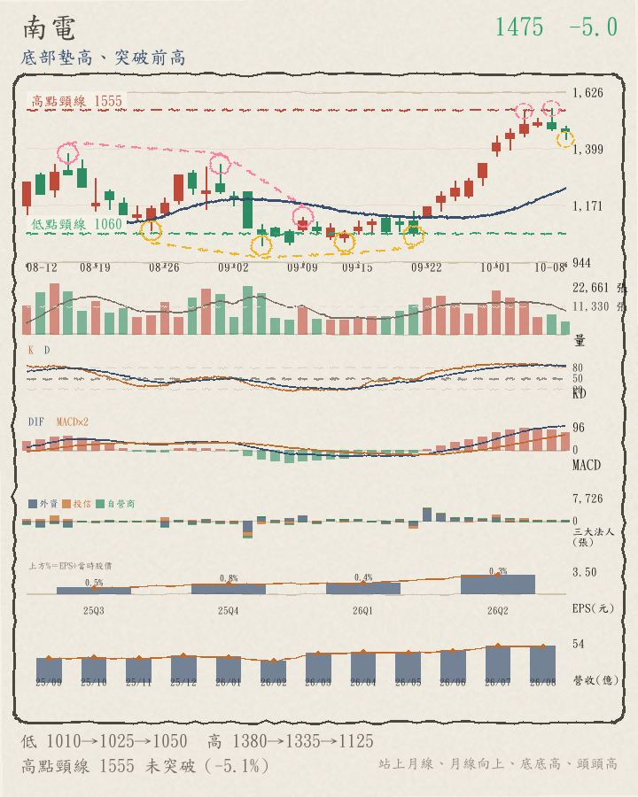
今天收黑、成交量也比平均少、站上月線 1239.5，離高點頸線 1555 還差 5.1%，轉折結構仍是底底高＋頭頭高。
- 月線位置：收盤 1475 在月線 1239.5 之上；5 日線 1483 也在月線之上（短均在上）；月線向上、5 日線向上
- 量能：成交量是 20 日均量的 0.49 倍，比 20 日均量少很多
- 關鍵價位：高點頸線 1555 還沒突破，差 5.1%；最近轉折高點 1125（高於 31.1%）；最近轉折低點 1050（高於 40.5%）
- 轉折結構：低點 1010、1025、1050 一路墊高 4.0%、高點 1380、1335、1125 也一路墊高 38.7%，是底底高＋頭頭高；還沒確認的轉折低點 10-08 1435；還沒確認的轉折高點 10-05 1550、10-07 1560（圖上虛線小圈）
區間或轉弱 成交金額 77.45 億・全榜第 42 名（上市第 33 名）
好條件 3/8：站上月線、月線向上、外資買超
不好條件 3/8：今日下跌、相對大盤弱、收盤跌破前一日低點
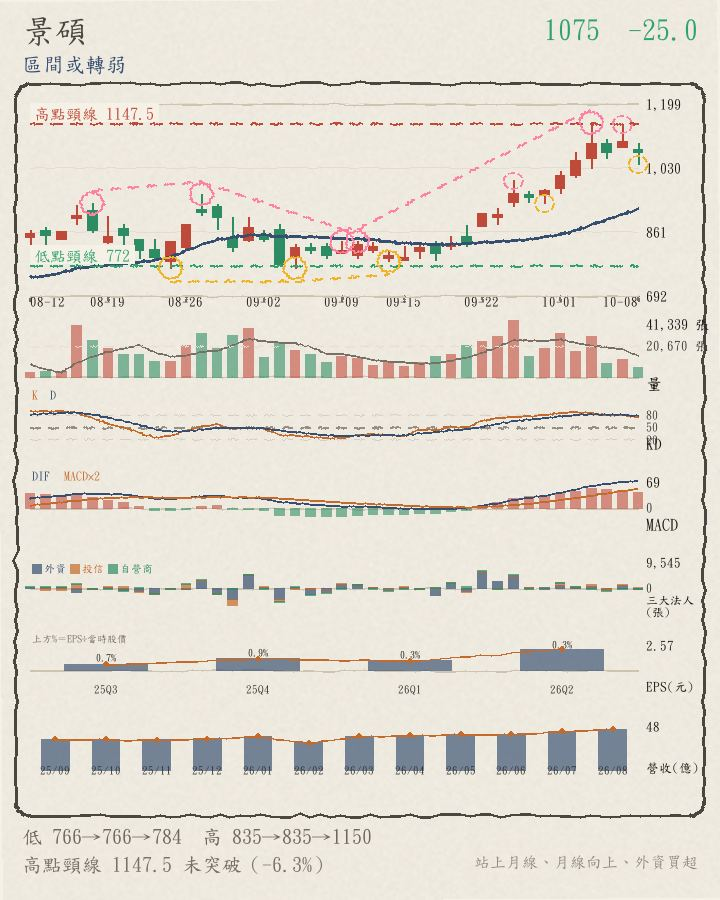
今天收黑、成交量也比平均少、站上月線 922，離高點頸線 1147.5 還差 6.3%，轉折還沒走出明顯方向。
- 月線位置：收盤 1075 在月線 922 之上；5 日線 1078 也在月線之上（短均在上）；月線向上、5 日線向上
- 量能：成交量是 20 日均量的 0.40 倍，比 20 日均量少很多
- 關鍵價位：高點頸線 1147.5 還沒突破，差 6.3%；最近轉折高點 1150（低於 6.5%）；最近轉折低點 784（高於 37.1%）
- 轉折結構：低點 766、766、784 與高點 835、835、1150 都沒有明顯遞增，屬於區間震盪或轉弱；還沒確認的轉折低點 09-30 937、10-08 1040；還沒確認的轉折高點 09-24 996、10-07 1145（圖上虛線小圈）
剛突破前高 成交金額 73.16 億・全榜第 44 名（上市第 34 名）
好條件 6/8：站上月線、月線向上、頭頭高、突破頸線、相對大盤強、量價攻擊（收紅＋大量）
不好條件 1/8：外資賣超
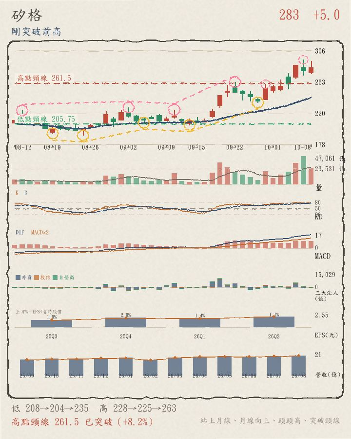
今天帶量收紅、站上月線 241.85，已站上高點頸線 261.5，高點還在墊高（但底部沒同步墊高）。
- 月線位置：收盤 283 在月線 241.85 之上；5 日線 272.9 也在月線之上（短均在上）；月線向上、5 日線向上
- 量能：成交量是 20 日均量的 1.58 倍，比 20 日均量大不少；收紅又量增，量價配合
- 關鍵價位：高點頸線 261.5 已站上；最近轉折高點 263（高於 7.6%）；最近轉折低點 235（高於 20.4%）
- 轉折結構：高點 228、225、263 墊高 11.6%（頭頭高），但低點 207.5、204、235 沒有同步墊高；還沒確認的轉折高點 09-30 260、10-07 293.5（圖上虛線小圈）
區間或轉弱 成交金額 65 億・全榜第 45 名（上市第 35 名）
好條件 3/8：站上月線、突破頸線、外資買超
不好條件 4/8：今日下跌、相對大盤弱、量增下跌（出貨）、月線下彎
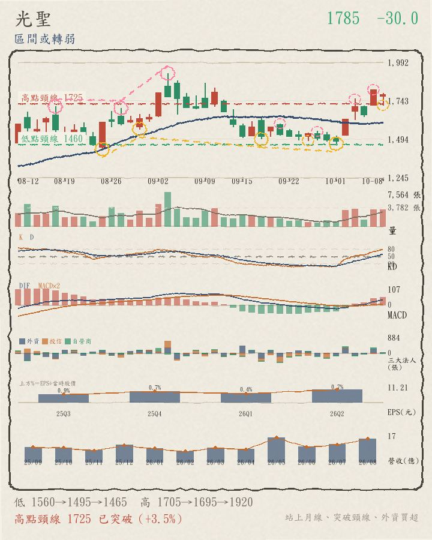
今天帶量收黑、站上月線 1603，已站上高點頸線 1725，轉折還沒走出明顯方向。
- 月線位置：收盤 1785 在月線 1603 之上；5 日線 1716 也在月線之上（短均在上）；月線走平或向下、5 日線向上
- 量能：成交量是 20 日均量的 1.77 倍，比 20 日均量大不少；收黑卻量增，量價背離
- 關鍵價位：高點頸線 1725 已站上；最近轉折高點 1920（低於 7.0%）；最近轉折低點 1465（高於 21.8%）
- 轉折結構：低點 1560、1495、1465 與高點 1705、1695、1920 都沒有明顯遞增，屬於區間震盪或轉弱；還沒確認的轉折低點 09-24 1485、10-08 1715；還沒確認的轉折高點 10-05 1755、10-07 1815（圖上虛線小圈）
上升趨勢（底底高＋頭頭高） 成交金額 64.09 億・全榜第 46 名（上市第 36 名）
好條件 6/8：站上月線、月線向上、底底高、頭頭高、突破頸線、相對大盤強
不好條件 3/8：今日下跌、量增下跌（出貨）、外資賣超
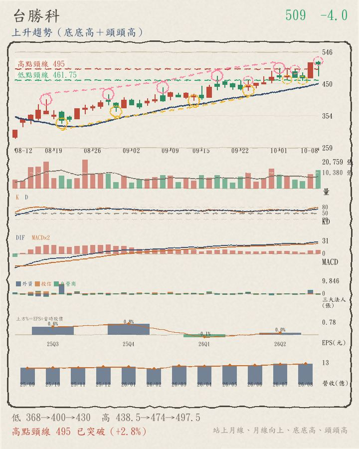
今天帶量收黑、站上月線 450.7，已站上高點頸線 495，轉折結構仍是底底高＋頭頭高。
- 月線位置：收盤 509 在月線 450.7 之上；5 日線 486.8 也在月線之上（短均在上）；月線向上、5 日線向上
- 量能：成交量是 20 日均量的 1.65 倍，比 20 日均量大不少；收黑卻量增，量價背離
- 關鍵價位：高點頸線 495 已站上；最近轉折高點 497.5（高於 2.3%）；最近轉折低點 430.5（高於 18.2%）
- 轉折結構：低點 367.5、400、430.5 一路墊高 17.1%、高點 438.5、474、497.5 也一路墊高 13.5%，是底底高＋頭頭高；還沒確認的轉折低點 10-02 463、10-06 460.5；還沒確認的轉折高點 10-05 492.5、10-08 518（圖上虛線小圈）
剛突破前高 成交金額 63.75 億・全榜第 47 名（上市第 37 名）
好條件 6/8：站上月線、月線向上、頭頭高、相對大盤強、外資買超、量價攻擊（收紅＋大量）
不好條件 0/8：無
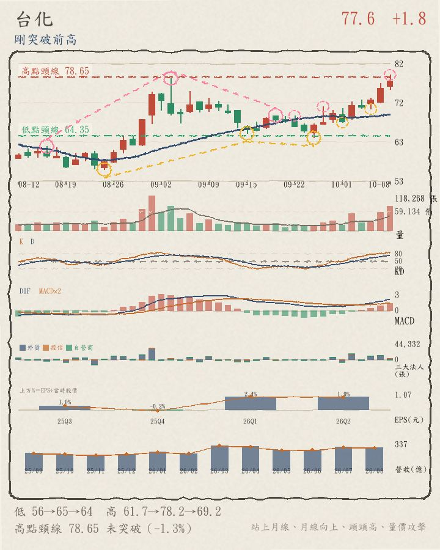
今天帶量收紅、站上月線 69.525，離高點頸線 78.65 還差 1.3%，高點還在墊高（但底部沒同步墊高）。
- 月線位置：收盤 77.6 在月線 69.525 之上；5 日線 73.94 也在月線之上（短均在上）；月線向上、5 日線向上
- 量能：成交量是 20 日均量的 3.12 倍，比 20 日均量大不少；收紅又量增，量價配合
- 關鍵價位：高點頸線 78.65 還沒突破，差 1.3%；最近轉折高點 69.2（高於 12.1%）；最近轉折低點 63.8（高於 21.6%）
- 轉折結構：高點 61.7、78.2、69.2 墊高 14.3%（頭頭高），但低點 56.1、64.9、63.8 沒有同步墊高；還沒確認的轉折低點 10-01 67.5、10-06 70.8；還沒確認的轉折高點 09-29 71.4、10-08 79.1（圖上虛線小圈）
高點墊高、底部不穩 成交金額 61.77 億・全榜第 48 名（上市第 38 名）
好條件 4/8：頭頭高、相對大盤強、外資買超、量價攻擊（收紅＋大量）
不好條件 2/8：在月線之下、月線下彎
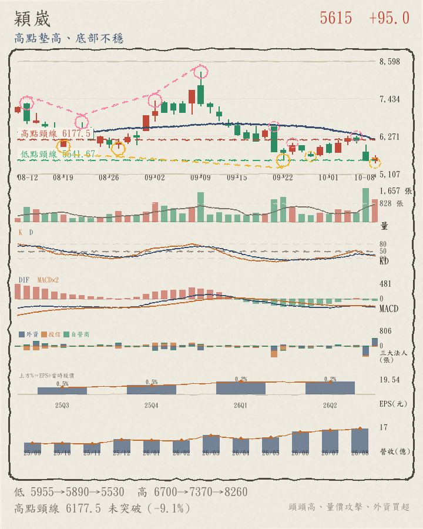
今天帶量收紅、跌破月線 6168，離高點頸線 6177.5 還差 9.1%，高點還在墊高（但底部沒同步墊高）。
- 月線位置：收盤 5615 在月線 6168 之下；5 日線 5908 也在月線之下（短均在下）；月線走平或向下、5 日線向上
- 量能：成交量是 20 日均量的 1.79 倍，比 20 日均量大不少；收紅又量增，量價配合
- 關鍵價位：高點頸線 6177.5 還沒突破，差 9.1%；最近轉折高點 8260（低於 32.0%）；最近轉折低點 5530（高於 1.5%）
- 轉折結構：高點 6700、7370、8260 墊高 23.3%（頭頭高），但低點 5955、5890、5530 沒有同步墊高；還沒確認的轉折低點 09-29 5650、10-08 5445；還沒確認的轉折高點 09-23 6070、10-06 6285（圖上虛線小圈）
底部墊高、突破前高 成交金額 58.84 億・全榜第 49 名（上市第 39 名）
好條件 6/8：站上月線、月線向上、底底高、頭頭高、相對大盤強、外資買超
不好條件 0/8：無
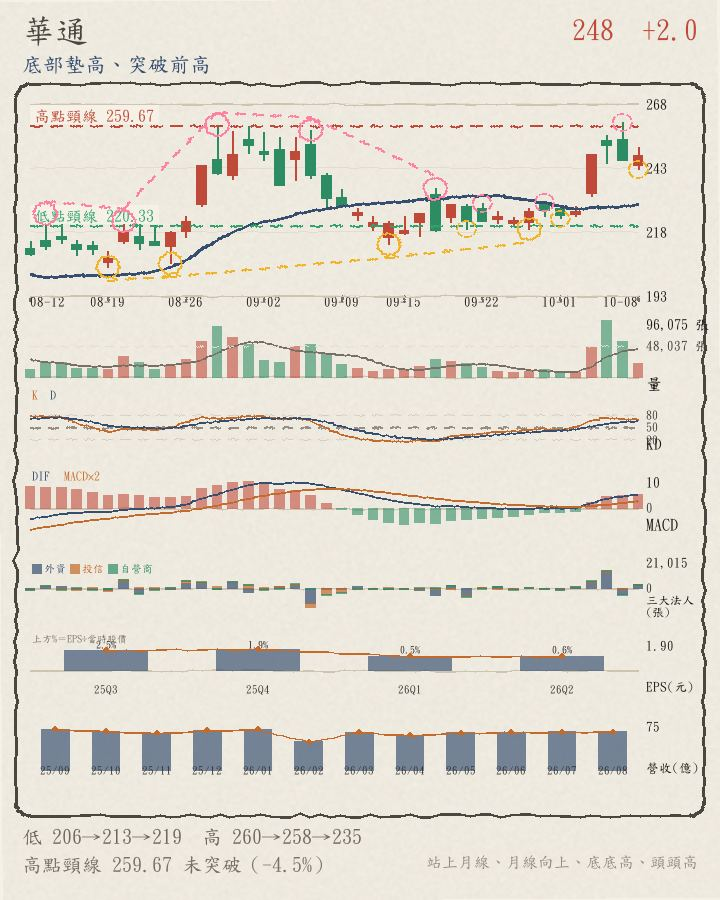
今天收紅、站上月線 228.725，離高點頸線 259.67 還差 4.5%，轉折結構仍是底底高＋頭頭高。
- 月線位置：收盤 248 在月線 228.725 之上；5 日線 244.1 也在月線之上（短均在上）；月線向上、5 日線向上
- 量能：成交量是 20 日均量的 0.99 倍，跟 20 日均量差不多
- 關鍵價位：高點頸線 259.67 還沒突破，差 4.5%；最近轉折高點 235（高於 5.5%）；最近轉折低點 219（高於 13.2%）
- 轉折結構：低點 205.5、213、219 一路墊高 6.6%、高點 260、258、235 也一路墊高 11.1%，是底底高＋頭頭高；還沒確認的轉折低點 10-01 223、10-08 242.5；還沒確認的轉折高點 09-30 229.5、10-07 261（圖上虛線小圈）
區間或轉弱 成交金額 57.11 億・全榜第 50 名（上市第 40 名）
好條件 0/8：無
不好條件 8/8：跌破前低、今日下跌、相對大盤弱、在月線之下、量增下跌（出貨）、外資賣超、月線下彎、收盤跌破前一日低點
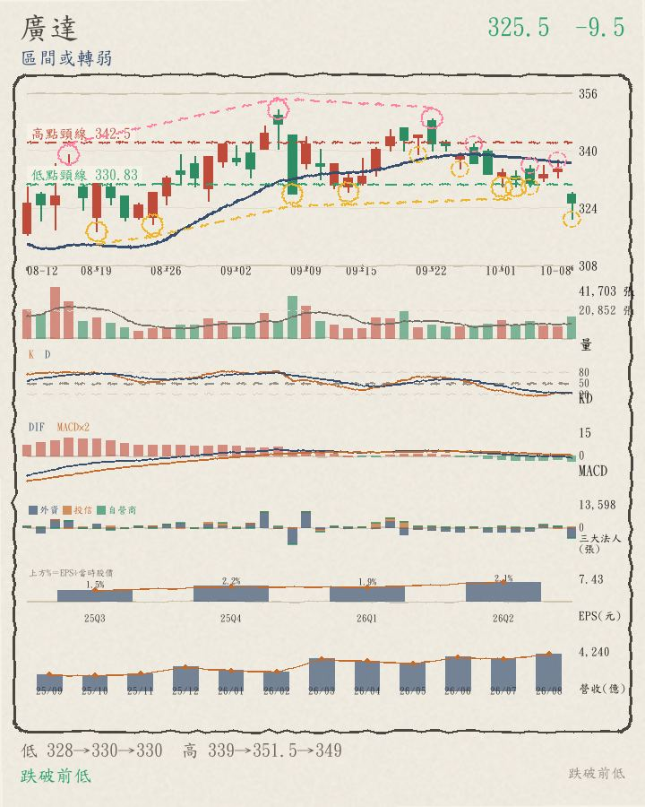
今天帶量收黑、跌破月線 336.75，跌破前一個轉折低點（高點頸線 342.5 還在收盤上方），轉折還沒走出明顯方向。
- 月線位置：收盤 325.5 在月線 336.75 之下；5 日線 331.4 也在月線之下（短均在下）；月線走平或向下、5 日線走平或向下
- 量能：成交量是 20 日均量的 1.30 倍，比 20 日均量大不少；收黑卻量增，量價背離
- 關鍵價位：高點頸線 342.5 還沒突破、還在收盤上方 5.0%；最近轉折高點 349（低於 6.7%）；最近轉折低點 330（低於 1.4%）
- 轉折結構：低點 328.5、330、330 與高點 339、351.5、349 都沒有明顯遞增，屬於區間震盪或轉弱；還沒確認的轉折低點 10-05 330、10-08 321；還沒確認的轉折高點 10-05 336、10-07 337.5（圖上虛線小圈）
高點墊高、底部不穩 成交金額 55 億・全榜第 52 名（上市第 41 名）
好條件 3/8：站上月線、頭頭高、相對大盤強
不好條件 2/8：外資賣超、月線下彎
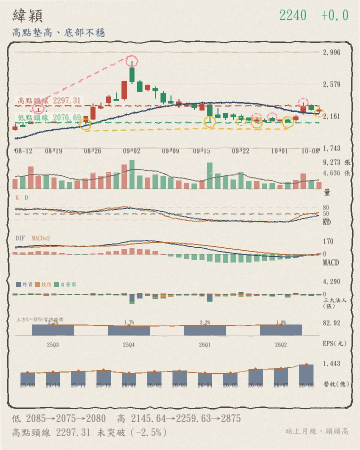
今天收黑、成交量也比平均少、站上月線 2189.75，離高點頸線 2297.31 還差 2.5%，高點還在墊高（但底部沒同步墊高）。
- 月線位置：收盤 2240 在月線 2189.75 之上；5 日線 2201 也在月線之上（短均在上）；月線走平或向下、5 日線向上
- 量能：成交量是 20 日均量的 0.68 倍，比 20 日均量少很多
- 關鍵價位：高點頸線 2297.31 還沒突破，差 2.5%；最近轉折高點 2875（低於 22.1%）；最近轉折低點 2080（高於 7.7%）
- 轉折結構：高點 2145.64、2259.63、2875 墊高 34.0%（頭頭高），但低點 2085、2075、2080 沒有同步墊高；還沒確認的轉折低點 09-22 2090、10-08 2200；還沒確認的轉折高點 09-30 2145、10-06 2335（圖上虛線小圈）
上升趨勢（底底高＋頭頭高） 成交金額 54.11 億・全榜第 53 名（上市第 42 名）
好條件 6/8：站上月線、月線向上、底底高、頭頭高、突破頸線、外資買超
不好條件 3/8：今日下跌、相對大盤弱、量增下跌（出貨）
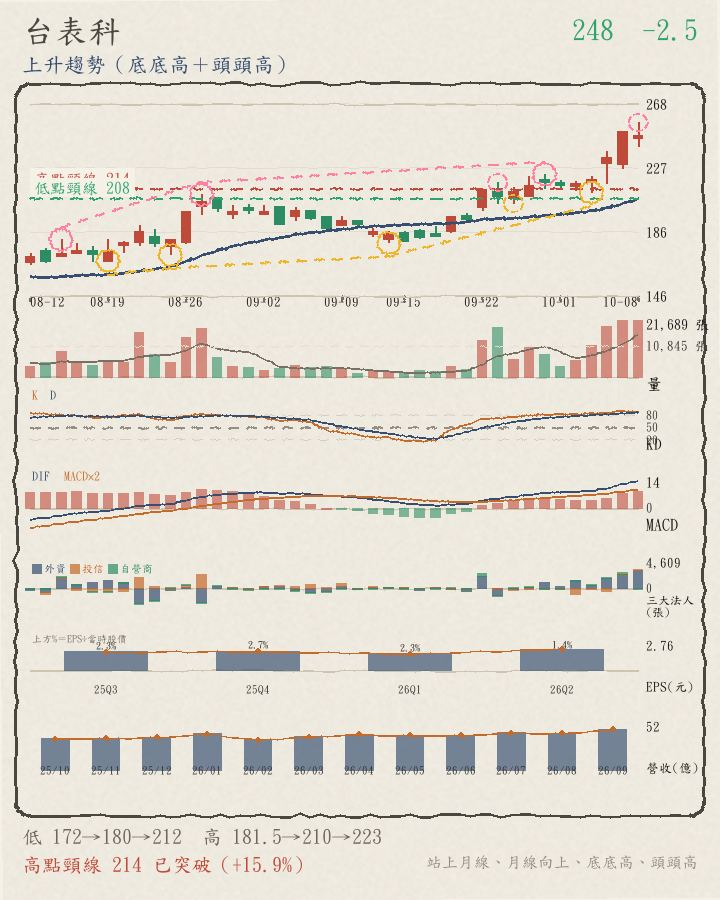
今天帶量收黑、站上月線 207.475，已站上高點頸線 214，轉折結構仍是底底高＋頭頭高。
- 月線位置：收盤 248 在月線 207.475 之上；5 日線 233.9 也在月線之上（短均在上）；月線向上、5 日線向上
- 量能：成交量是 20 日均量的 2.97 倍，比 20 日均量大不少；收黑卻量增，量價背離
- 關鍵價位：高點頸線 214 已站上；最近轉折高點 223（高於 11.2%）；最近轉折低點 211.5（高於 17.3%）
- 轉折結構：低點 172、179.5、211.5 一路墊高 23.0%、高點 181.5、210、223 也一路墊高 22.9%，是底底高＋頭頭高；還沒確認的轉折低點 09-24 204.5；還沒確認的轉折高點 09-23 218、10-08 256（圖上虛線小圈）
剛突破前高 成交金額 48.8 億・全榜第 54 名（上市第 43 名）
好條件 7/8：站上月線、月線向上、頭頭高、突破頸線、相對大盤強、外資買超、量價攻擊（收紅＋大量）
不好條件 0/8：無
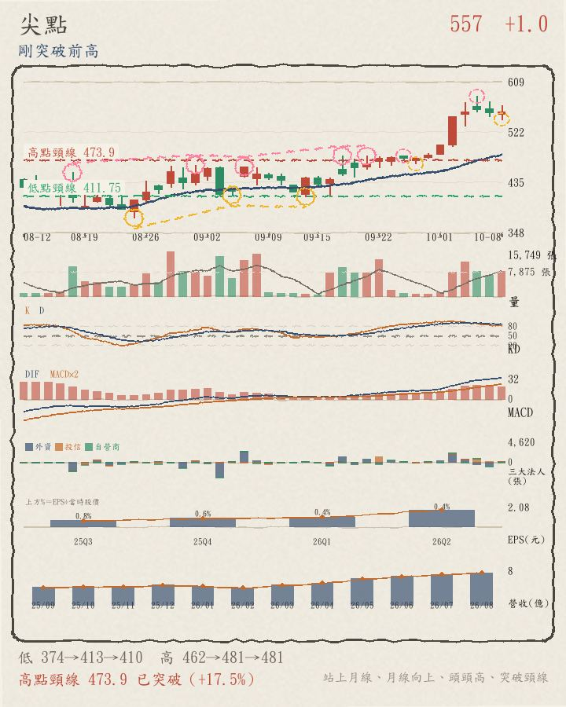
今天帶量收紅、站上月線 483.157，已站上高點頸線 473.9，高點還在墊高（但底部沒同步墊高）。
- 月線位置：收盤 557 在月線 483.157 之上；5 日線 555.947 也在月線之上（短均在上）；月線向上、5 日線向上
- 量能：成交量是 20 日均量的 1.60 倍，比 20 日均量大不少；收紅又量增，量價配合
- 關鍵價位：高點頸線 473.9 已站上；最近轉折高點 481（高於 15.8%）；最近轉折低點 410.5（高於 35.7%）
- 轉折結構：高點 462、481、481 墊高 21.4%（頭頭高），但低點 373.5、413、410.5 沒有同步墊高；還沒確認的轉折低點 09-29 466.931、10-08 544；還沒確認的轉折高點 09-24 480.5、10-06 584（圖上虛線小圈）
高點墊高、底部不穩 成交金額 48.66 億・全榜第 55 名（上市第 44 名）
好條件 6/8：站上月線、月線向上、頭頭高、相對大盤強、外資買超、量價攻擊（收紅＋大量）
不好條件 0/8：無
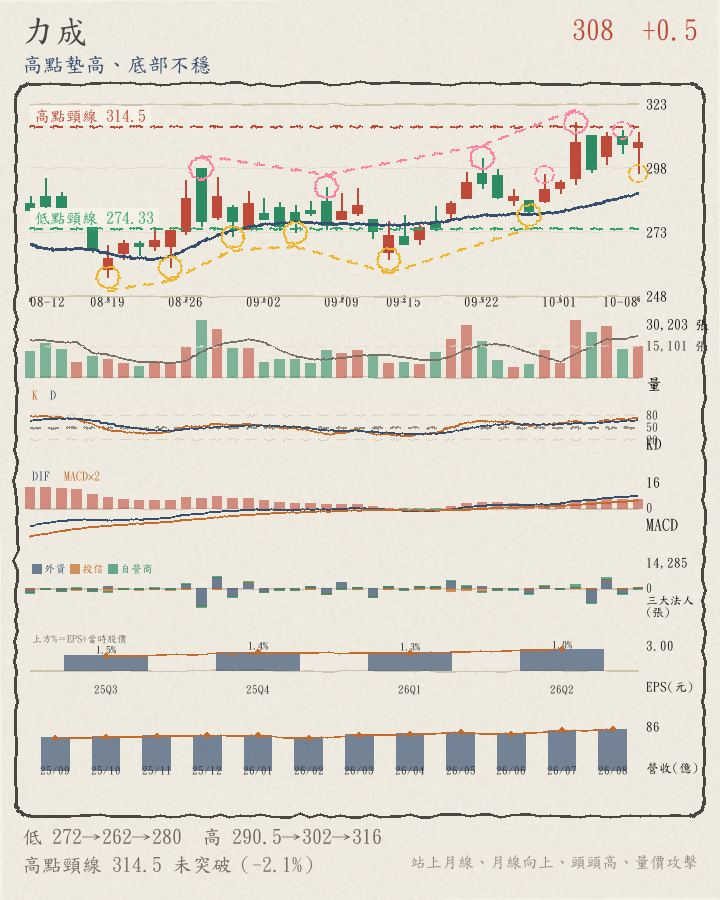
今天帶量收紅、站上月線 288.125，離高點頸線 314.5 還差 2.1%，高點還在墊高（但底部沒同步墊高）。
- 月線位置：收盤 308 在月線 288.125 之上；5 日線 306.3 也在月線之上（短均在上）；月線向上、5 日線向上
- 量能：成交量是 20 日均量的 1.10 倍，比 20 日均量大一些；收紅又量增，量價配合
- 關鍵價位：高點頸線 314.5 還沒突破，差 2.1%；最近轉折高點 316（低於 2.5%）；最近轉折低點 279.5（高於 10.2%）
- 轉折結構：高點 290.5、302、316 墊高 8.8%（頭頭高），但低點 272.5、262、279.5 沒有同步墊高；還沒確認的轉折低點 10-08 296；還沒確認的轉折高點 09-30 295.5、10-07 313（圖上虛線小圈）
高點墊高、底部不穩 成交金額 46.95 億・全榜第 56 名（上市第 45 名）
好條件 5/8：站上月線、月線向上、頭頭高、相對大盤強、外資買超
不好條件 1/8：今日下跌
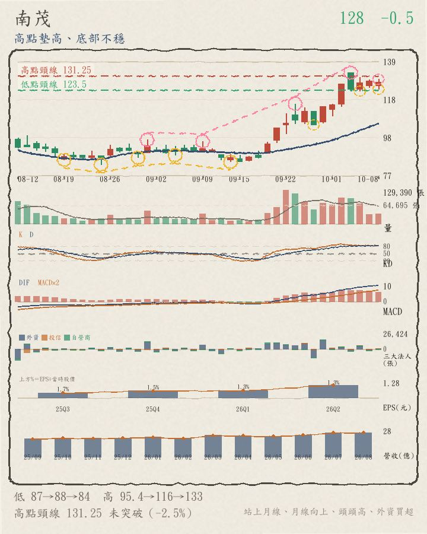
今天收黑、成交量也比平均少、站上月線 105.245，離高點頸線 131.25 還差 2.5%，高點還在墊高（但底部沒同步墊高）。
- 月線位置：收盤 128 在月線 105.245 之上；5 日線 127 也在月線之上（短均在上）；月線向上、5 日線向上
- 量能：成交量是 20 日均量的 0.69 倍，比 20 日均量少很多
- 關鍵價位：高點頸線 131.25 還沒突破，差 2.5%；最近轉折高點 133（低於 3.8%）；最近轉折低點 84.3（高於 51.8%）
- 轉折結構：高點 95.4、116、133 墊高 39.4%（頭頭高），但低點 86.6、87.9、84.3 沒有同步墊高；還沒確認的轉折低點 10-06 123、10-08 124；還沒確認的轉折高點 10-08 129.5（圖上虛線小圈）
底部墊高、突破前高 成交金額 45.61 億・全榜第 57 名（上市第 46 名）
好條件 7/8：站上月線、月線向上、底底高、頭頭高、突破頸線、相對大盤強、量價攻擊（收紅＋大量）
不好條件 1/8：外資賣超
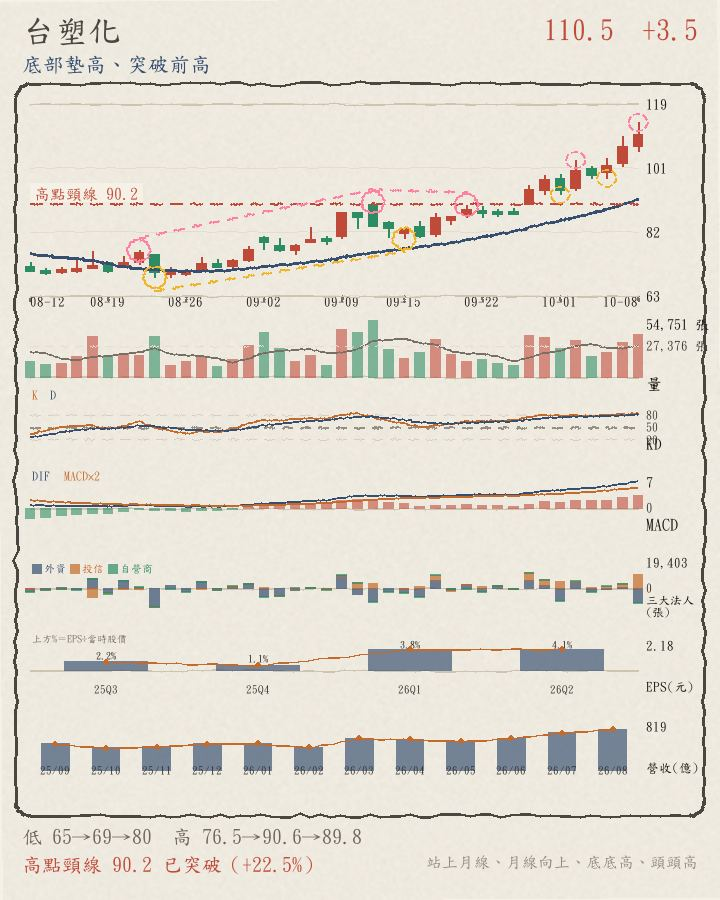
今天帶量收紅、站上月線 91.49，已站上高點頸線 90.2，轉折結構仍是底底高＋頭頭高。
- 月線位置：收盤 110.5 在月線 91.49 之上；5 日線 103.52 也在月線之上（短均在上）；月線向上、5 日線向上
- 量能：成交量是 20 日均量的 1.50 倍，比 20 日均量大不少；收紅又量增，量價配合
- 關鍵價位：高點頸線 90.2 已站上；最近轉折高點 89.8（高於 23.1%）；最近轉折低點 80（高於 38.1%）
- 轉折結構：低點 65.4、68.6、80 一路墊高 22.3%、高點 76.5、90.6、89.8 也一路墊高 26.9%，是底底高＋頭頭高；還沒確認的轉折低點 10-01 92.8、10-06 97.7；還沒確認的轉折高點 10-02 103、10-08 114（圖上虛線小圈）
剛突破前高 成交金額 44.13 億・全榜第 62 名（上市第 47 名）
好條件 7/8：站上月線、月線向上、頭頭高、突破頸線、相對大盤強、外資買超、量價攻擊（收紅＋大量）
不好條件 0/8：無
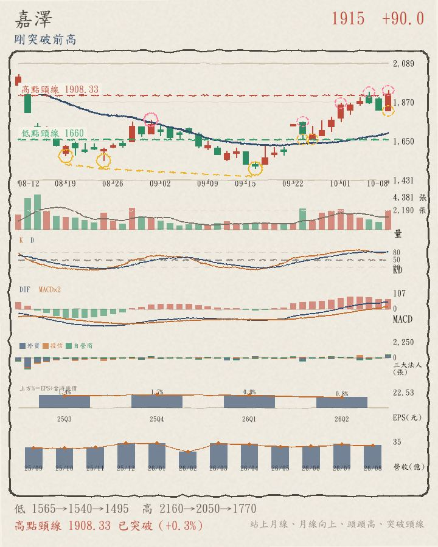
今天帶量收紅、站上月線 1696.25，已站上高點頸線 1908.33，高點還在墊高（但底部沒同步墊高）。
- 月線位置：收盤 1915 在月線 1696.25 之上；5 日線 1867 也在月線之上（短均在上）；月線向上、5 日線向上
- 量能：成交量是 20 日均量的 1.95 倍，比 20 日均量大不少；收紅又量增，量價配合
- 關鍵價位：高點頸線 1908.33 已站上；最近轉折高點 1770（高於 8.2%）；最近轉折低點 1495（高於 28.1%）
- 轉折結構：高點 2160、2050、1770 墊高 9.3%（頭頭高），但低點 1565、1540、1495 沒有同步墊高；還沒確認的轉折低點 09-24 1660、10-08 1820；還沒確認的轉折高點 10-06 1925、10-08 1935（圖上虛線小圈）
區間或轉弱 成交金額 43.68 億・全榜第 63 名（上市第 48 名）
好條件 0/8：無
不好條件 7/8：今日下跌、相對大盤弱、在月線之下、量增下跌（出貨）、外資賣超、月線下彎、收盤跌破前一日低點
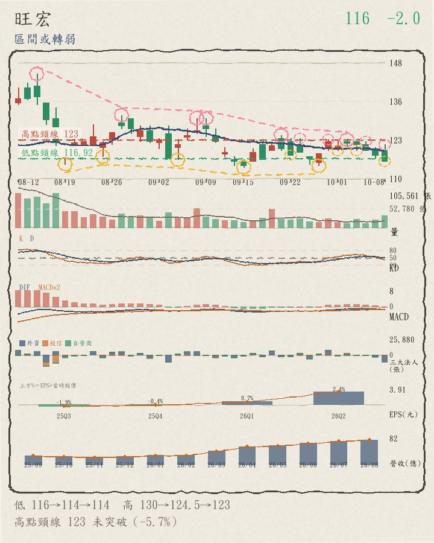
今天帶量收黑、跌破月線 119.4，離高點頸線 123 還差 5.7%，轉折還沒走出明顯方向。
- 月線位置：收盤 116 在月線 119.4 之下；5 日線 119.4 也在月線之上（短均在上）；月線走平或向下、5 日線走平或向下
- 量能：成交量是 20 日均量的 1.46 倍，比 20 日均量大不少；收黑卻量增，量價背離
- 關鍵價位：高點頸線 123 還沒突破，差 5.7%；最近轉折高點 123（低於 5.7%）；最近轉折低點 114.5（高於 1.3%）
- 轉折結構：低點 116.5、114、114.5 與高點 130、124.5、123 都沒有明顯遞增，屬於區間震盪或轉弱；還沒確認的轉折低點 10-05 119.5、10-08 116；還沒確認的轉折高點 10-06 122.5、10-08 121.5（圖上虛線小圈）
高點墊高、底部不穩 成交金額 41.4 億・全榜第 66 名（上市第 49 名）
好條件 3/8：站上月線、月線向上、頭頭高
不好條件 4/8：今日下跌、相對大盤弱、外資賣超、收盤跌破前一日低點
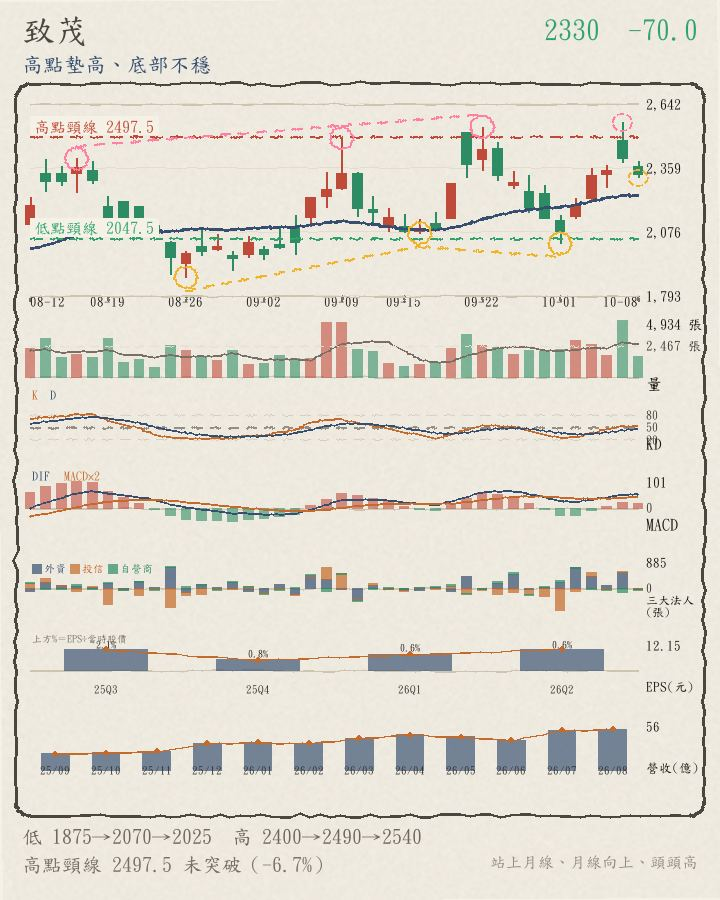
今天收黑、成交量也比平均少、站上月線 2239.5，離高點頸線 2497.5 還差 6.7%，高點還在墊高（但底部沒同步墊高）。
- 月線位置：收盤 2330 在月線 2239.5 之上；5 日線 2319 也在月線之上（短均在上）；月線向上、5 日線向上
- 量能：成交量是 20 日均量的 0.69 倍，比 20 日均量少很多
- 關鍵價位：高點頸線 2497.5 還沒突破，差 6.7%；最近轉折高點 2540（低於 8.3%）；最近轉折低點 2025（高於 15.1%）
- 轉折結構：高點 2400、2490、2540 墊高 5.8%（頭頭高），但低點 1875、2070、2025 沒有同步墊高；還沒確認的轉折低點 10-08 2315；還沒確認的轉折高點 10-07 2560（圖上虛線小圈）
剛突破前高 成交金額 41.31 億・全榜第 67 名（上市第 50 名）
好條件 6/8：站上月線、月線向上、頭頭高、突破頸線、相對大盤強、外資買超
不好條件 0/8：無
今天收紅、但成交量比平均少、站上月線 603.2，已站上高點頸線 564.5，高點還在墊高（但底部沒同步墊高）。
- 月線位置：收盤 806 在月線 603.2 之上；5 日線 764.6 也在月線之上（短均在上）；月線向上、5 日線向上
- 量能：成交量是 20 日均量的 0.28 倍，比 20 日均量少很多；收紅但量縮，量價背離
- 關鍵價位：高點頸線 564.5 已站上；最近轉折高點 555（高於 45.2%）；最近轉折低點 482（高於 67.2%）
- 轉折結構：高點 387.5、599、555 墊高 47.4%（頭頭高），但低點 237、493.5、482 沒有同步墊高；還沒確認的轉折低點 10-01 611、10-08 763；還沒確認的轉折高點 09-30 649、10-06 818（圖上虛線小圈）
剛突破前高 成交金額 218.17 億・全榜第 7 名（上櫃第 1 名）
好條件 4/8：站上月線、月線向上、頭頭高、突破頸線
不好條件 5/8：今日下跌、相對大盤弱、量增下跌（出貨）、外資賣超、收盤跌破前一日低點
今天帶量收黑、站上月線 1008.3，已站上高點頸線 1018.75，高點還在墊高（但底部沒同步墊高）。
- 月線位置：收盤 1130 在月線 1008.3 之上；5 日線 1184 也在月線之上（短均在上）；月線向上、5 日線向上
- 量能：成交量是 20 日均量的 1.70 倍，比 20 日均量大不少；收黑卻量增，量價背離
- 關鍵價位：高點頸線 1018.75 已站上；最近轉折高點 1010（高於 11.9%）；最近轉折低點 872（高於 29.6%）
- 轉折結構：高點 1015、1015、1010 墊高 24.8%（頭頭高），但低點 931、875、872 沒有同步墊高；還沒確認的轉折低點 10-06 1145、10-08 1095；還沒確認的轉折高點 10-06 1260（圖上虛線小圈）
高點墊高、底部不穩 成交金額 180.02 億・全榜第 13 名（上櫃第 2 名）
好條件 2/8：月線向上、頭頭高
不好條件 6/8：今日下跌、相對大盤弱、在月線之下、量增下跌（出貨）、外資賣超、收盤跌破前一日低點
今天帶量收黑、跌破月線 18855.5，離高點頸線 19845 還差 11.9%，高點還在墊高（但底部沒同步墊高）。
- 月線位置：收盤 17485 在月線 18855.5 之下；5 日線 18516 也在月線之下（短均在下）；月線向上、5 日線走平或向下
- 量能：成交量是 20 日均量的 5.51 倍，比 20 日均量大不少；收黑卻量增，量價背離
- 關鍵價位：高點頸線 19845 還沒突破，差 11.9%；最近轉折高點 21800（低於 19.8%）；最近轉折低點 17170（高於 1.8%）
- 轉折結構：高點 18600、19795、21800 墊高 17.2%（頭頭高），但低點 15930、14600、17170 沒有同步墊高；還沒確認的轉折低點 10-02 18355、10-08 15975；還沒確認的轉折高點 10-06 19895（圖上虛線小圈）
底部墊高、突破前高 成交金額 129.19 億・全榜第 17 名（上櫃第 3 名）
好條件 6/8：站上月線、月線向上、底底高、頭頭高、相對大盤強、量價攻擊（收紅＋大量）
不好條件 1/8：外資賣超
今天帶量收紅、站上月線 121.75，離高點頸線 137.25 還差 1.6%，轉折結構仍是底底高＋頭頭高。
- 月線位置：收盤 135 在月線 121.75 之上；5 日線 128.8 也在月線之上（短均在上）；月線向上、5 日線向上
- 量能：成交量是 20 日均量的 1.72 倍，比 20 日均量大不少；收紅又量增，量價配合
- 關鍵價位：高點頸線 137.25 還沒突破，差 1.6%；最近轉折高點 129.5（高於 4.2%）；最近轉折低點 113（高於 19.5%）
- 轉折結構：低點 108.571、111、113 一路墊高 4.1%、高點 89.4284、135、129.5 也一路墊高 7.7%，是底底高＋頭頭高；還沒確認的轉折低點 10-01 113.5；還沒確認的轉折高點 10-08 139.5（圖上虛線小圈）
剛突破前高 成交金額 128.66 億・全榜第 18 名（上櫃第 4 名）
好條件 5/8：站上月線、月線向上、頭頭高、相對大盤強、外資買超
不好條件 0/8：無
今天收紅、但成交量比平均少、站上月線 1498.75，離高點頸線 1807.5 還差 3.7%，高點還在墊高（但底部沒同步墊高）。
- 月線位置：收盤 1740 在月線 1498.75 之上；5 日線 1723 也在月線之上（短均在上）；月線向上、5 日線向上
- 量能：成交量是 20 日均量的 0.88 倍，比 20 日均量少一些；收紅但量縮，量價背離
- 關鍵價位：高點頸線 1807.5 還沒突破，差 3.7%；最近轉折高點 1460（高於 19.2%）；最近轉折低點 1275（高於 36.5%）
- 轉折結構：高點 1565、1430、1460 墊高 25.7%（頭頭高），但低點 1395、1295、1275 沒有同步墊高；還沒確認的轉折低點 10-06 1680、10-08 1645；還沒確認的轉折高點 10-05 1780、10-07 1835（圖上虛線小圈）
底部墊高、突破前高 成交金額 109.84 億・全榜第 26 名（上櫃第 5 名）
好條件 4/8：站上月線、月線向上、底底高、頭頭高
不好條件 4/8：今日下跌、相對大盤弱、量增下跌（出貨）、外資賣超
今天帶量收黑、站上月線 211.6，離高點頸線 231.5 還差 2.4%，轉折結構仍是底底高＋頭頭高。
- 月線位置：收盤 226 在月線 211.6 之上；5 日線 222.6 也在月線之上（短均在上）；月線向上、5 日線向上
- 量能：成交量是 20 日均量的 1.09 倍，比 20 日均量大一些；收黑卻量增，量價背離
- 關鍵價位：高點頸線 231.5 還沒突破，差 2.4%；最近轉折高點 233（低於 3.0%）；最近轉折低點 208（高於 8.7%）
- 轉折結構：低點 152、171、208 一路墊高 36.8%、高點 203、203、233 也一路墊高 2.1%，是底底高＋頭頭高；還沒確認的轉折低點 10-06 211；還沒確認的轉折高點 10-05 228、10-07 238（圖上虛線小圈）
區間或轉弱 成交金額 93.53 億・全榜第 33 名（上櫃第 6 名）
好條件 4/8：站上月線、月線向上、突破頸線、外資買超
不好條件 3/8：今日下跌、相對大盤弱、收盤跌破前一日低點
今天收黑、成交量也比平均少、站上月線 511.75，已站上高點頸線 487.33，轉折還沒走出明顯方向。
- 月線位置：收盤 581 在月線 511.75 之上；5 日線 593.4 也在月線之上（短均在上）；月線向上、5 日線向上
- 量能：成交量是 20 日均量的 0.59 倍，比 20 日均量少很多
- 關鍵價位：高點頸線 487.33 已站上；最近轉折高點 630（低於 7.8%）；最近轉折低點 482（高於 20.5%）
- 轉折結構：低點 438.5、420、482 與高點 492、478、630 都沒有明顯遞增，屬於區間震盪或轉弱；還沒確認的轉折低點 10-08 566；還沒確認的轉折高點 09-23 518（圖上虛線小圈）
高點墊高、底部不穩 成交金額 89.56 億・全榜第 35 名（上櫃第 7 名）
好條件 4/8：站上月線、月線向上、頭頭高、相對大盤強
不好條件 3/8：今日下跌、量增下跌（出貨）、外資賣超
今天帶量收黑、站上月線 1485.75，離高點頸線 1591.67 還差 4.5%，高點還在墊高（但底部沒同步墊高）。
- 月線位置：收盤 1520 在月線 1485.75 之上；5 日線 1526 也在月線之上（短均在上）；月線向上、5 日線走平或向下
- 量能：成交量是 20 日均量的 1.70 倍，比 20 日均量大不少；收黑卻量增，量價背離
- 關鍵價位：高點頸線 1591.67 還沒突破，差 4.5%；最近轉折高點 1750（低於 13.1%）；最近轉折低點 1480（高於 2.7%）
- 轉折結構：高點 1080、1505、1750 墊高 62.0%（頭頭高），但低點 1300、1240、1480 沒有同步墊高；還沒確認的轉折低點 10-05 1490、10-08 1395；還沒確認的轉折高點 10-05 1575、10-08 1570（圖上虛線小圈）
剛突破前高 成交金額 82.76 億・全榜第 39 名（上櫃第 8 名）
好條件 2/8：站上月線、頭頭高
不好條件 5/8：今日下跌、相對大盤弱、外資賣超、月線下彎、收盤跌破前一日低點
今天收黑、成交量也比平均少、站上月線 2817.25，離高點頸線 3157.5 還差 6.3%，高點還在墊高（但底部沒同步墊高）。
- 月線位置：收盤 2960 在月線 2817.25 之上；5 日線 2989 也在月線之上（短均在上）；月線走平或向下、5 日線向上
- 量能：成交量是 20 日均量的 0.93 倍，比 20 日均量少一些
- 關鍵價位：高點頸線 3157.5 還沒突破，差 6.3%；最近轉折高點 2950（高於 0.3%）；最近轉折低點 2585（高於 14.5%）
- 轉折結構：高點 3600、2930、2950 墊高 8.8%（頭頭高），但低點 1450、2650、2585 沒有同步墊高；還沒確認的轉折低點 10-01 2605、10-08 2955；還沒確認的轉折高點 10-05 3105、10-07 3210（圖上虛線小圈）
底部墊高、突破前高 成交金額 81.19 億・全榜第 40 名（上櫃第 9 名）
好條件 8/8：站上月線、月線向上、底底高、頭頭高、突破頸線、相對大盤強、外資買超、量價攻擊（收紅＋大量）
不好條件 0/8：無
今天帶量收紅、站上月線 134.325，已站上高點頸線 99.15，轉折結構仍是底底高＋頭頭高。
- 月線位置：收盤 175 在月線 134.325 之上；5 日線 154.7 也在月線之上（短均在上）；月線向上、5 日線向上
- 量能：成交量是 20 日均量的 1.73 倍，比 20 日均量大不少；收紅又量增，量價配合
- 關鍵價位：高點頸線 99.15 已站上；最近轉折高點 98.9（高於 76.9%）；最近轉折低點 115（高於 52.2%）
- 轉折結構：低點 81.8、84.8、115 一路墊高 40.6%、高點 163、99.4、98.9 也一路墊高 76.9%，是底底高＋頭頭高；還沒確認的轉折低點 09-30 134、10-06 144；還沒確認的轉折高點 10-02 157.5、10-08 175（圖上虛線小圈）
區間或轉弱 成交金額 77.05 億・全榜第 43 名（上櫃第 10 名）
好條件 2/8：站上月線、月線向上
不好條件 3/8：今日下跌、相對大盤弱、外資賣超
今天收黑、成交量也比平均少、站上月線 119.175，離高點頸線 138.5 還差 6.9%，轉折還沒走出明顯方向。
- 月線位置：收盤 129 在月線 119.175 之上；5 日線 131.7 也在月線之上（短均在上）；月線向上、5 日線向上
- 量能：成交量是 20 日均量的 0.83 倍，比 20 日均量少很多
- 關鍵價位：高點頸線 138.5 還沒突破，差 6.9%；最近轉折高點 140（低於 7.9%）；最近轉折低點 100（高於 29.0%）
- 轉折結構：低點 103.5、104、100 與高點 125、140、140 都沒有明顯遞增，屬於區間震盪或轉弱；還沒確認的轉折低點 10-06 126.5、10-08 125.5；還沒確認的轉折高點 09-23 125、10-07 135.5（圖上虛線小圈）
上升趨勢（底底高＋頭頭高） 成交金額 55.39 億・全榜第 51 名（上櫃第 11 名）
好條件 7/8：站上月線、月線向上、底底高、頭頭高、突破頸線、相對大盤強、量價攻擊（收紅＋大量）
不好條件 1/8：外資賣超
今天帶量收紅、站上月線 696.4，已站上高點頸線 733.75，轉折結構仍是底底高＋頭頭高。
- 月線位置：收盤 736 在月線 696.4 之上；5 日線 704.4 也在月線之上（短均在上）；月線向上、5 日線向上
- 量能：成交量是 20 日均量的 3.98 倍，比 20 日均量大不少；收紅又量增，量價配合
- 關鍵價位：高點頸線 733.75 已站上；最近轉折高點 748（低於 1.6%）；最近轉折低點 643（高於 14.5%）
- 轉折結構：低點 633、637、643 一路墊高 1.6%、高點 573、719、748 也一路墊高 30.5%，是底底高＋頭頭高；還沒確認的轉折低點 09-21 691、10-05 650；還沒確認的轉折高點 10-06 729、10-08 789（圖上虛線小圈）
剛突破前高 成交金額 45.41 億・全榜第 58 名（上櫃第 12 名）
好條件 7/8：站上月線、月線向上、頭頭高、突破頸線、相對大盤強、外資買超、量價攻擊（收紅＋大量）
不好條件 0/8：無
今天帶量收紅、站上月線 115.8，已站上高點頸線 112.75，高點還在墊高（但底部沒同步墊高）。
- 月線位置：收盤 154 在月線 115.8 之上；5 日線 134.1 也在月線之上（短均在上）；月線向上、5 日線向上
- 量能：成交量是 20 日均量的 6.70 倍，比 20 日均量大不少；收紅又量增，量價配合
- 關鍵價位：高點頸線 112.75 已站上；最近轉折高點 112.5（高於 36.9%）；最近轉折低點 107.5（高於 43.3%）
- 轉折結構：高點 126、114.5、112.5 墊高 36.9%（頭頭高），但低點 109、103.5、107.5 沒有同步墊高；還沒確認的轉折高點 10-05 132、10-08 154（圖上虛線小圈）
高點墊高、底部不穩 成交金額 44.82 億・全榜第 59 名（上櫃第 13 名）
好條件 3/8：站上月線、月線向上、頭頭高
不好條件 3/8：今日下跌、相對大盤弱、外資賣超
今天收黑、站上月線 194.775，離高點頸線 228.25 還差 5.1%，高點還在墊高（但底部沒同步墊高）。
- 月線位置：收盤 216.5 在月線 194.775 之上；5 日線 218.3 也在月線之上（短均在上）；月線向上、5 日線向上
- 量能：成交量是 20 日均量的 1.00 倍，跟 20 日均量差不多
- 關鍵價位：高點頸線 228.25 還沒突破，差 5.1%；最近轉折高點 229.5（低於 5.7%）；最近轉折低點 181.5（高於 19.3%）
- 轉折結構：高點 187.5、202、229.5 墊高 22.4%（頭頭高），但低點 173、170、181.5 沒有同步墊高；還沒確認的轉折低點 10-06 211、10-08 208.5；還沒確認的轉折高點 10-07 227（圖上虛線小圈）
剛突破前高 成交金額 44.53 億・全榜第 60 名（上櫃第 14 名）
好條件 4/8：站上月線、月線向上、頭頭高、相對大盤強
不好條件 3/8：今日下跌、量增下跌（出貨）、外資賣超
今天帶量收黑、站上月線 1308.25，離高點頸線 1592.5 還差 4.2%，高點還在墊高（但底部沒同步墊高）。
- 月線位置：收盤 1525 在月線 1308.25 之上；5 日線 1488 也在月線之上（短均在上）；月線向上、5 日線向上
- 量能：成交量是 20 日均量的 1.31 倍，比 20 日均量大不少；收黑卻量增，量價背離
- 關鍵價位：高點頸線 1592.5 還沒突破，差 4.2%；最近轉折高點 1270（高於 20.1%）；最近轉折低點 1180（高於 29.2%）
- 轉折結構：高點 1455、1435、1270 墊高 25.6%（頭頭高），但低點 1185、1180、1180 沒有同步墊高；還沒確認的轉折低點 10-01 1260、10-08 1490；還沒確認的轉折高點 10-06 1590、10-08 1595（圖上虛線小圈）
底部墊高、突破前高 成交金額 44.35 億・全榜第 61 名（上櫃第 15 名）
好條件 6/8：站上月線、月線向上、底底高、頭頭高、相對大盤強、外資買超
不好條件 0/8：無
今天收黑、站上月線 461.475，離高點頸線 521 還差 4.6%，轉折結構仍是底底高＋頭頭高。
- 月線位置：收盤 497 在月線 461.475 之上；5 日線 489.5 也在月線之上（短均在上）；月線向上、5 日線向上
- 量能：成交量是 20 日均量的 0.99 倍，跟 20 日均量差不多
- 關鍵價位：高點頸線 521 還沒突破，差 4.6%；最近轉折高點 487（高於 2.1%）；最近轉折低點 436.5（高於 13.9%）
- 轉折結構：低點 289、407、436.5 一路墊高 51.0%、高點 431、496、487 也一路墊高 8.8%，是底底高＋頭頭高；還沒確認的轉折低點 10-01 450、10-07 475.5；還沒確認的轉折高點 10-06 530、10-08 512（圖上虛線小圈）
區間或轉弱 成交金額 43.09 億・全榜第 64 名（上櫃第 16 名）
好條件 5/8：站上月線、突破頸線、相對大盤強、外資買超、量價攻擊（收紅＋大量）
不好條件 1/8：月線下彎
今天帶量收紅、站上月線 3304.25，已站上高點頸線 3140，轉折還沒走出明顯方向。
- 月線位置：收盤 3320 在月線 3304.25 之上；5 日線 3114 也在月線之下（短均在下）；月線走平或向下、5 日線走平或向下
- 量能：成交量是 20 日均量的 1.57 倍，比 20 日均量大不少；收紅又量增，量價配合
- 關鍵價位：高點頸線 3140 已站上；最近轉折高點 3775（低於 12.1%）；最近轉折低點 2960（高於 12.2%）
- 轉折結構：低點 2570、3165、2960 與高點 3100、3935、3775 都沒有明顯遞增，屬於區間震盪或轉弱；還沒確認的轉折低點 09-29 3055、10-08 3000；還沒確認的轉折高點 10-05 3180、10-08 3320（圖上虛線小圈）
區間或轉弱 成交金額 42.54 億・全榜第 65 名（上櫃第 17 名）
好條件 2/8：月線向上、相對大盤強
不好條件 3/8：跌破前低、在月線之下、外資賣超
今天收黑、成交量也比平均少、跌破月線 2077.25，跌破前一個轉折低點（高點頸線 2196.25 還在收盤上方），轉折還沒走出明顯方向。
- 月線位置：收盤 2060 在月線 2077.25 之下；5 日線 2081 也在月線之上（短均在上）；月線向上、5 日線走平或向下
- 量能：成交量是 20 日均量的 0.73 倍，比 20 日均量少很多
- 關鍵價位：高點頸線 2196.25 還沒突破、還在收盤上方 6.2%；最近轉折高點 2350（低於 12.3%）；最近轉折低點 2080（低於 1.0%）
- 轉折結構：低點 1970、1900、2080 與高點 2195、2160、2350 都沒有明顯遞增，屬於區間震盪或轉弱；還沒確認的轉折低點 10-05 2055、10-08 2050；還沒確認的轉折高點 09-30 2215（圖上虛線小圈）
高點墊高、底部不穩 成交金額 39.41 億・全榜第 68 名（上櫃第 18 名）
好條件 6/8：站上月線、月線向上、頭頭高、突破頸線、相對大盤強、量價攻擊（收紅＋大量）
不好條件 1/8：外資賣超
今天帶量收紅、站上月線 245.775，已站上高點頸線 254，高點還在墊高（但底部沒同步墊高）。
- 月線位置：收盤 256 在月線 245.775 之上；5 日線 247.7 也在月線之上（短均在上）；月線向上、5 日線向上
- 量能：成交量是 20 日均量的 1.07 倍，比 20 日均量大一些；收紅又量增，量價配合
- 關鍵價位：高點頸線 254 已站上；最近轉折高點 289.5（低於 11.6%）；最近轉折低點 238（高於 7.6%）
- 轉折結構：高點 239.5、251.5、289.5 墊高 20.9%（頭頭高），但低點 220、238、238 沒有同步墊高；還沒確認的轉折低點 10-05 239.5、10-08 243；還沒確認的轉折高點 10-05 249、10-08 256.5（圖上虛線小圈）
剛突破前高 成交金額 33.43 億・全榜第 69 名（上櫃第 19 名）
好條件 4/8：站上月線、頭頭高、相對大盤強、量價攻擊（收紅＋大量）
不好條件 2/8：外資賣超、月線下彎
今天帶量收紅、站上月線 181.425，離高點頸線 203.25 還差 0.1%，高點還在墊高（但底部沒同步墊高）。
- 月線位置：收盤 203 在月線 181.425 之上；5 日線 188.3 也在月線之上（短均在上）；月線走平或向下、5 日線向上
- 量能：成交量是 20 日均量的 3.56 倍，比 20 日均量大不少；收紅又量增，量價配合
- 關鍵價位：高點頸線 203.25 還沒突破，差 0.1%；最近轉折高點 195（高於 4.1%）；最近轉折低點 168（高於 20.8%）
- 轉折結構：高點 215、203.5、195 墊高 4.1%（頭頭高），但低點 156、176、168 沒有同步墊高；還沒確認的轉折低點 10-01 176、10-06 180；還沒確認的轉折高點 10-05 191.5、10-08 203（圖上虛線小圈）
剛突破前高 成交金額 31.23 億・全榜第 70 名（上櫃第 20 名）
好條件 3/8：站上月線、月線向上、頭頭高
不好條件 4/8：今日下跌、相對大盤弱、量增下跌（出貨）、外資賣超
今天帶量收黑、站上月線 905.35，離高點頸線 1105 還差 6.8%，高點還在墊高（但底部沒同步墊高）。
- 月線位置：收盤 1030 在月線 905.35 之上；5 日線 995.8 也在月線之上（短均在上）；月線向上、5 日線向上
- 量能：成交量是 20 日均量的 2.83 倍，比 20 日均量大不少；收黑卻量增，量價背離
- 關鍵價位：高點頸線 1105 還沒突破，差 6.8%；最近轉折高點 888（高於 16.0%）；最近轉折低點 816（高於 26.2%）
- 轉折結構：高點 1125、898、888 墊高 22.2%（頭頭高），但低點 803、817、816 沒有同步墊高；還沒確認的轉折低點 09-24 881；還沒確認的轉折高點 09-22 905、10-08 1085（圖上虛線小圈）